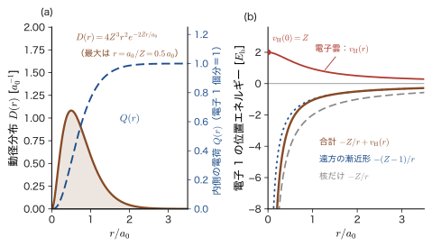
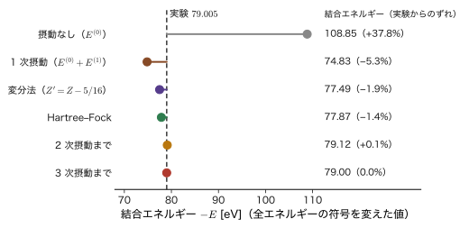
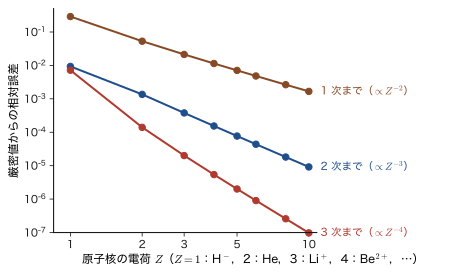
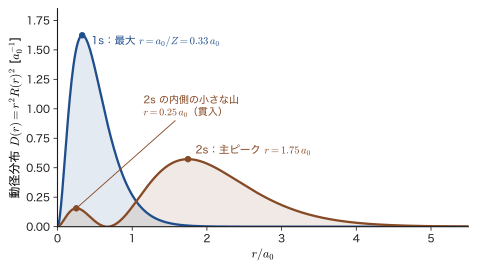
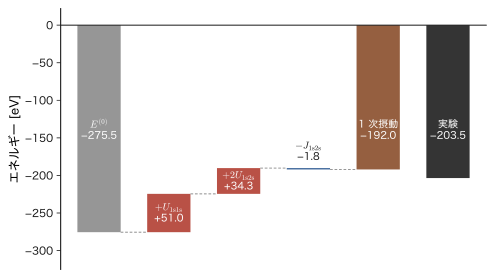
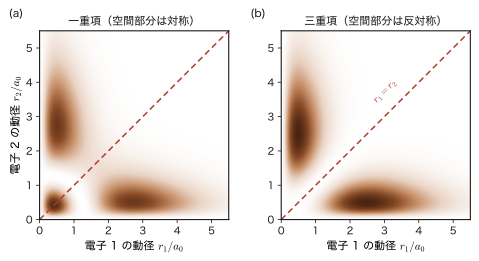

第29章摂動論で解くヘリウム原子とリチウム原子
電子を 2 個もつヘリウム原子は，電子どうしの Coulomb（クーロン）反発のために Schrödinger（シュレーディンガー）方程式が厳密には解けない．しかし，電子間反発を小さな補正として上乗せする摂動論を使えば，基底状態のエネルギー $-79.0\ \mathrm{eV}$ を，たった 1 次の補正で $-74.8\ \mathrm{eV}$（誤差 5 %）まで見積もることができる．これが，この章で身につける結論であり，方法である．
水素原子は電子が 1 個だけなので厳密に解け（第15章），準位 $E_n=-13.6\ \mathrm{eV}/n^2$ は実験のスペクトルとぴったり合った．ところが電子を 1 個増やすと，電子間反発の項が 2 個の電子の座標を結びつけ，閉じた形の解は書き下せなくなる．太陽・地球・月の 3 体問題を閉じた式で解けないのと同じ事情である．周期表のほとんどすべての原子・分子・固体には電子が 2 個以上あるから，この壁をどう越えるかは，量子力学が現実の物質に届くかどうかの分かれ道になる．前の 2 章で学んだ摂動論（第27章，第28章）の最初の本格的な応用として，発想は単純である．電子間反発を「ないもの」とみなせば，ヘリウムは水素様原子 2 個に分かれて厳密に解ける．その解の上に，電子間反発を補正として加える．6 重積分になる補正は，AD 03 で学んだ球殻定理（球対称な電荷分布の外側の電場は，中心にある点電荷の電場と同じ）を使うと 1 本の積分に落ち，答えは驚くほど簡単な $\tfrac58Z\,E_{\mathrm h}$ になる．リチウムは電子が 3 個だが，同じ方法で電子対の数が 3 組に増えるだけである．
ただし，1 次摂動の結果を無批判に信じてはいけない．ヘリウムのイオン化エネルギーは $20.4\ \mathrm{eV}$ と見積もられ，実験の $24.59\ \mathrm{eV}$ から 17 % もずれる．リチウムでは，1 次摂動は「Li 原子は Li$^+$ と電子より不安定だ」という誤った予言までしてしまう．どこまで良く，どこから悪くなるのかを数値で確かめ，その原因（摂動が「小さくない」こと，電子どうしが遮蔽し合うこと，Pauli（パウリ）の排他原理と交換積分）を理解するのが，この章の後半の目的である．遮蔽の考え方は第VI部の変分原理（第30章，第31章）へ，Pauli の排他原理と交換積分は第VII部の多電子系（第33章，第35章）へとつながる．材料とのつながりも深い．リチウムイオン電池で電極の間を行き来するのは，Li の 2s 電子（第 1 イオン化エネルギー $5.39\ \mathrm{eV}$）が外れた Li$^+$ であり，内側の 1s 電子は第 3 イオン化エネルギーが $122\ \mathrm{eV}$ と桁違いに深く束縛されて，化学反応にまったく関与しない．この差の理由を，遮蔽を使って例題29.11 で見積もる．
- ヘリウム原子のハミルトニアンを，水素様原子 2 個の和 $\hat{H}_0$ と電子間反発 $\hat{V}$ に分け，非摂動状態 $\phi_{1\mathrm{s}}(\bm{r}_1)\phi_{1\mathrm{s}}(\bm{r}_2)$ とそのエネルギー $E_0^{(0)}=2Z^2\varepsilon_{1\mathrm{s}}=-108.85\ \mathrm{eV}$ を求めること
- 6 重積分 $\iint e^{-\alpha(r_1+r_2)}/\lvert\bm{r}_1-\bm{r}_2\rvert\,\dd v_1\dd v_2=20\pi^2/\alpha^5$ を，Legendre（ルジャンドル）展開（角度積分は $l=0$ の項だけが残る）と球殻定理の 2 通りの方法で導き，$\langle V\rangle=\tfrac58Z\,E_{\mathrm h}$ を得ること
- 1 次摂動のエネルギー $E=(2Z^2-\tfrac54Z)\varepsilon_{1\mathrm{s}}=-74.83\ \mathrm{eV}$ を実験値 $-79.005\ \mathrm{eV}$ と比べ，イオン化エネルギーでは誤差が 17 % に拡大することを説明すること．$1/Z$ 展開により He 型イオン（H$^-$，Li$^+$，Be$^{2+}$，…）の全エネルギーを系統的に見積もること
- リチウムの 3 電子ハミルトニアンと，1s 軌道・2s 軌道の準位の見積り（電子対が 3 組），$U_{\mathrm{2s2s}}=\tfrac{77}{512}Z\,E_{\mathrm h}$ の導出
- Pauli の排他原理を守る $(1\mathrm{s})^2(2\mathrm{s})$ 配置の 1 次摂動 $E^{(1)}=U_{\mathrm{1s1s}}+2U_{\mathrm{1s2s}}-J_{\mathrm{1s2s}}$ を計算し，Coulomb 積分 $U_{ab}$ と交換積分 $J_{ab}$ の意味を説明すること
- ヘリウムの 1s2s 励起状態が一重項と三重項に $E^{(0)}+U\pm J$ に分かれること（Hund（フント）の規則の起源）と，その分裂の大きさが実験の約 3 倍になる理由（遮蔽）を説明すること
- Li の 2s 電子（$5.39\ \mathrm{eV}$）と 1s 電子（$122\ \mathrm{eV}$）の桁違いの差を，遮蔽（Slater の規則）で見積もること．1 次摂動の限界を数値で示し，遮蔽の効果を取り込む次の一歩（有効核電荷 $Z'=Z-\tfrac{5}{16}$ の変分法）へ橋渡しすること
もとにしたノート：望月泰英『物理学ノート 量子力学3』 pp. 27–28．
29.1 ヘリウム原子のハミルトニアンと摂動の選び方
29.1.1 ヘリウム原子のハミルトニアン
ヘリウム原子は，電荷 $+Ze_0$（$Z=2$）の原子核と 2 個の電子からできている．電気素量は $e_0=1.602\,176\,634\times10^{-19}\ \mathrm{C}$ で，電子の電荷は $-e_0$ である．原子核は電子よりずっと重い（ヘリウムの原子核の質量は電子の約 7300 倍）ので，ここでは原子核を原点に静止したものとみなし，原点から測った電子 1，電子 2 の位置ベクトルを $\bm{r}_1$，$\bm{r}_2$ と書く．2 個の電子の間の距離は $r_{12}=\lvert\bm{r}_1-\bm{r}_2\rvert$ である（図29.1）．スピンに依存する小さな項（スピン軌道相互作用，第26章）は無視する．このとき，系の全エネルギーを表す演算子は，次の 5 項の和になる．
\begin{equation} \hat{H}=-\frac{\hbar^2}{2m_{\mathrm e}}\nabla_1^2-\frac{1}{4\pi\varepsilon_0}\frac{Ze_0^2}{r_1} -\frac{\hbar^2}{2m_{\mathrm e}}\nabla_2^2-\frac{1}{4\pi\varepsilon_0}\frac{Ze_0^2}{r_2} +\frac{1}{4\pi\varepsilon_0}\frac{e_0^2}{\lvert\bm{r}_1-\bm{r}_2\rvert} \label{eq:29-H} \end{equation}- 第 1 項 $-\dfrac{\hbar^2}{2m_{\mathrm e}}\nabla_1^2$：電子 1 の運動エネルギー．$\nabla_1^2=\dfrac{\partial^2}{\partial x_1^2}+\dfrac{\partial^2}{\partial y_1^2}+\dfrac{\partial^2}{\partial z_1^2}$ は，電子 1 の座標 $(x_1,y_1,z_1)$ だけについての微分（Laplace 演算子）である．
- 第 2 項 $-\dfrac{Ze_0^2}{4\pi\varepsilon_0r_1}$：電子 1 と原子核の Coulomb 引力の位置エネルギー．$r_1=\lvert\bm{r}_1\rvert$ は電子 1 と原子核の距離で，引力なので負である．
- 第 3 項，第 4 項：電子 2 についての同じ量．
- 第 5 項 $+\dfrac{e_0^2}{4\pi\varepsilon_0\lvert\bm{r}_1-\bm{r}_2\rvert}$：電子どうしの Coulomb 反発の位置エネルギー．同符号の電荷の反発なので正である．
どの項も単位は $\mathrm{J}$ である．たとえば第 5 項は，$\dfrac{e_0^2}{4\pi\varepsilon_0}$ が $\mathrm{J\,m}$ の次元をもち，それを距離 $r_{12}$ で割るのでエネルギーになる．本章ではあとで He 型イオン（H$^-$：$Z=1$，Li$^+$：$Z=3$，Be$^{2+}$：$Z=4$，…）も扱うので，核電荷 $Z$ を記号のまま残しておく．$Z=2$ とおいたものがヘリウム原子である．
このハミルトニアンの固有値問題 $\hat{H}\Psi=E\Psi$ は，2 個の電子の座標 $(\bm{r}_1,\bm{r}_2)$ すなわち 6 個の変数についての偏微分方程式である．もし電子間反発の項（第 5 項）がなければ，$\hat{H}$ は「電子 1 の座標だけの項」と「電子 2 の座標だけの項」の和になって，変数分離で 2 個の水素様原子の問題に分解できる．第 5 項が $\bm{r}_1$ と $\bm{r}_2$ の両方に同時に依存するために，そうはいかない．これは古典力学の 3 体問題と同じ困難で，ヘリウム原子の Schrödinger 方程式には，水素原子のような閉じた形の厳密解が存在しない．
記号：$\hat{H}_0$ と $\hat{V}$，$a_0$ と $a_{\mathrm B}$
第27章で断ったとおり，本書では摂動論のハミルトニアンを $\hat{H}=\hat{H}_0+\lambda\hat{V}$ と書く．関連シミュレーターや姉妹編（AD 05）で $\hat{H}^{(0)}$，$\hat{H}'$（$\hat{H}^{\mathrm P}=\lambda\hat{H}'$）と書かれている量が，それぞれ本書の $\hat{H}_0$，$\hat{V}$（$\lambda\hat{V}$）に当たる．また，シミュレーターでは Bohr 半径を $a_{\mathrm B}$ と書くが，本書の $a_0=4\pi\varepsilon_0\hbar^2/(m_{\mathrm e}e_0^2)=0.529\,177\ \text{Å}$ と同じ量である．状態は 1s，2s と小文字で書く．1 電子の準位 $\varepsilon_{1\mathrm{s}}$，$\varepsilon_{2\mathrm{s}}$ は水素原子（$Z=1$）の値（$\varepsilon_{1\mathrm{s}}=-13.606\ \mathrm{eV}$，$\varepsilon_{2\mathrm{s}}=\varepsilon_{1\mathrm{s}}/4$）で $Z$ を含まず，核電荷 $Z$ の水素様原子の準位は $Z^2\varepsilon_{1\mathrm{s}}$，$Z^2\varepsilon_{2\mathrm{s}}$ となる．なお，$\varepsilon_0$（真空の誘電率）とは別の量である．
29.1.2 非摂動項と摂動項に分ける
そこで，解ける部分と解けない部分に分ける．電子間反発の項を「摂動」とみなし，残りを「非摂動項」とする．
定義29.1 ヘリウム原子の非摂動項と摂動項
式 \eqref{eq:29-H} を $\hat{H}=\hat{H}_0+\lambda\hat{V}$ と書く．ここで
\begin{equation} \hat{H}_0=\hat{h}(1)+\hat{h}(2),\qquad \hat{h}(i)=-\frac{\hbar^2}{2m_{\mathrm e}}\nabla_i^2-\frac{Ze_0^2}{4\pi\varepsilon_0r_i}\ \ (i=1,2) \label{eq:29-H0} \end{equation}を非摂動項（unperturbed Hamiltonian），
\begin{equation} \hat{V}=\frac{1}{4\pi\varepsilon_0}\frac{e_0^2}{\lvert\bm{r}_1-\bm{r}_2\rvert} \label{eq:29-V} \end{equation}を摂動項（perturbation，電子間反発項）とよぶ．$\hat{h}(i)$ は，核電荷 $Ze_0$ の原子核と電子 $i$ 1 個だけからなる水素様原子のハミルトニアンである．$\lambda$ は摂動の「強さ」を数えるための便宜上のパラメータで，最後に $\lambda=1$ とおく．
この分け方は，単に「厳密に解ける部分」を集めただけではなく，物理的にも意味がある．原子核の引力 $Ze_0^2/(4\pi\varepsilon_0 r)$ は核電荷 $Z$ に比例して強くなるが，電子間反発の大きさは $Z$ によらない．したがって $Z$ が大きい原子（イオン）ほど，電子間反発は核の引力に比べて相対的に小さな補正になる．この見通しは 29.3 節で定量的に確かめる．
29.1.3 非摂動系は変数分離できる
非摂動系の Schrödinger 方程式を $\hat{H}_0\Psi^{(0)}=E^{(0)}\Psi^{(0)}$ と書く．解は，1 電子の方程式の解の積で書ける．
導出：$\hat{H}_0$ の固有状態は軌道の積になる
1 電子の方程式 $\hat{h}(i)\phi_a(\bm{r}_i)=\varepsilon_a\phi_a(\bm{r}_i)$ の解 $\phi_a$（固有値 $\varepsilon_a$）と $\phi_b$（固有値 $\varepsilon_b$）を使って，2 電子の関数
$$ \Psi^{(0)}(\bm{r}_1,\bm{r}_2)=\phi_a(\bm{r}_1)\,\phi_b(\bm{r}_2) $$をつくり，$\hat{H}_0=\hat{h}(1)+\hat{h}(2)$ を作用させる．$\hat{h}(1)$ は電子 1 の座標 $\bm{r}_1$ だけを微分する演算子なので，$\bm{r}_2$ だけの関数 $\phi_b(\bm{r}_2)$ は定数のように外へ出せる．同様に $\hat{h}(2)$ にとって $\phi_a(\bm{r}_1)$ は定数である．したがって
$$ \hat{H}_0\Psi^{(0)}=\bigl[\hat{h}(1)\phi_a(\bm{r}_1)\bigr]\phi_b(\bm{r}_2)+\phi_a(\bm{r}_1)\bigl[\hat{h}(2)\phi_b(\bm{r}_2)\bigr] =\varepsilon_a\phi_a(\bm{r}_1)\phi_b(\bm{r}_2)+\varepsilon_b\phi_a(\bm{r}_1)\phi_b(\bm{r}_2)=(\varepsilon_a+\varepsilon_b)\,\Psi^{(0)} $$となり，$\Psi^{(0)}=\phi_a(\bm{r}_1)\phi_b(\bm{r}_2)$ は固有値 $E^{(0)}=\varepsilon_a+\varepsilon_b$ の固有関数である．
（導出終わり）
とくに 2 個の電子が同じ軌道 $\phi_n$ にいる状態を考えると，一般論の記号（第27章）では次のように書ける．
\begin{equation} \hat{H}_0\Psi_n^{(0)}=E_n^{(0)}\Psi_n^{(0)},\qquad \Psi_n^{(0)}(\bm{r}_1,\bm{r}_2)=\phi_n(\bm{r}_1)\,\phi_n(\bm{r}_2),\qquad E_n^{(0)}=\varepsilon_{n,1}+\varepsilon_{n,2} \label{eq:29-sep} \end{equation}ここで $\varepsilon_{n,1}$，$\varepsilon_{n,2}$ は電子 1，電子 2 の 1 電子エネルギーである（同じ軌道なので等しい）．積の形は，「2 個の電子は互いに無関係に動く」ことを表している．確率でいえば $\lvert\Psi^{(0)}\rvert^2=\lvert\phi(\bm{r}_1)\rvert^2\lvert\phi(\bm{r}_2)\rvert^2$ で，独立な事象の確率が積になるのと同じである．電子間反発 $\hat{V}$ は，まさにこの「独立性」を壊す項である（電子が互いに避け合うので，位置に相関が生じる）．
29.1.4 水素様原子の 1s 軌道と無摂動のエネルギー
ヘリウム原子の基底状態では，電子は 1 電子の準位のうち最低の 1s 軌道にいると考えるのが自然である．そこで $\hat{h}$ の 1s 軌道として，核電荷 $Z$ の水素様原子の 1s 状態の解（第16章 16.2，第18章 18.1）を用いる．
\begin{equation} \phi_{1\mathrm{s}}(\bm{r})=\frac{1}{\sqrt{\pi}}\left(\frac{Z}{a_0}\right)^{3/2}e^{-Zr/a_0},\qquad -\frac{m_{\mathrm e}e_0^4}{8\varepsilon_0^2h^2}\,\frac{Z^2}{1^2}=Z^2\varepsilon_{1\mathrm{s}}\ \ (\text{この軌道の 1 電子準位}) \label{eq:29-phi1s} \end{equation}ここで，水素原子（$Z=1$）の 1s 準位 $\varepsilon_{1\mathrm{s}}$（$Z$ を含まない．真空の誘電率 $\varepsilon_0$ とは別の量）を
\begin{equation} \varepsilon_{1\mathrm{s}}\equiv-\frac{m_{\mathrm e}e_0^4}{8\varepsilon_0^2h^2}=-\frac{m_{\mathrm e}e_0^4}{2(4\pi\varepsilon_0)^2\hbar^2}=-\frac{e_0^2}{8\pi\varepsilon_0a_0}=-\frac{E_{\mathrm h}}{2}=-13.606\ \mathrm{eV} \label{eq:29-eps1s} \end{equation}と書いた（$h$ 形と $\hbar$ 形は $h=2\pi\hbar$ で結ばれる．3 番目の等号は $a_0=4\pi\varepsilon_0\hbar^2/(m_{\mathrm e}e_0^2)$ を使うと出る．$E_{\mathrm h}=e_0^2/(4\pi\varepsilon_0a_0)=27.211\ \mathrm{eV}$ は Hartree（ハートリー）エネルギー，第15章 15.6）．$\phi_{1\mathrm{s}}$ が規格化されていることは，$\int_0^\infty r^ne^{-\beta r}\dd r=n!/\beta^{n+1}$（大学数学 第32章 32.2）を使って，次のように確かめられる：
$$ \int\lvert\phi_{1\mathrm{s}}\rvert^2\dd v=\frac{1}{\pi}\frac{Z^3}{a_0^3}\cdot4\pi\int_0^\infty r^2e^{-2Zr/a_0}\dd r=\frac{4Z^3}{a_0^3}\cdot\frac{2!}{(2Z/a_0)^3}=\frac{4Z^3}{a_0^3}\cdot\frac{2a_0^3}{8Z^3}=1 $$（角度部分は全立体角で $4\pi$ になる）．式 \eqref{eq:29-sep} に代入すると，2 個の電子がともに 1s 軌道にいる非摂動状態が次のように決まる．
公式29.1 ヘリウム型原子の非摂動基底状態
\begin{equation} \Psi_0^{(0)}(\bm{r}_1,\bm{r}_2)=\phi_{1\mathrm{s}}(\bm{r}_1)\phi_{1\mathrm{s}}(\bm{r}_2)=\frac{1}{\pi}\left(\frac{Z}{a_0}\right)^3e^{-Z(r_1+r_2)/a_0},\qquad E_0^{(0)}=2Z^2\,\varepsilon_{1\mathrm{s}} \label{eq:29-Psi0} \end{equation}である．一般論（第27章）の番号では基底状態は $n=0$ とするので，添字を $0$ と書いた（水素様原子の状態は主量子数 $n=1,2,\dots$ で 1s，2s と書く）．$Z=2$ では $E_0^{(0)}=8\varepsilon_{1\mathrm{s}}=8\times(-13.606\ \mathrm{eV})=-108.848\ \mathrm{eV}$（$=-4E_{\mathrm h}=-108.846\ \mathrm{eV}$）である．
この値と，実験で測られたヘリウム原子の基底状態のエネルギー（$-79.005\ \mathrm{eV}$，29.3 節）の差は約 $30\ \mathrm{eV}$ で，これを「電子間反発の効果」が埋めるはずである．
例題29.1 電子間反発を無視したヘリウムのイオン化エネルギー
電子間反発を無視すると，ヘリウム原子の第 1 イオン化エネルギー（電子を 1 個取り去るのに必要なエネルギー）はいくらになるか．実験値 $24.587\ \mathrm{eV}$ と比べ，その差の意味を述べよ．
解答 電子を 1 個取り去った He$^+$ は電子 1 個の水素様イオン（$Z=2$）なので，そのエネルギーは式 \eqref{eq:29-phi1s} の $\varepsilon$ で $Z=2$ とした $E(\mathrm{He}^+)=4\varepsilon_{1\mathrm{s}}=4\times(-13.606)=-54.424\ \mathrm{eV}$ である．無摂動のヘリウム原子は $E_0^{(0)}=-108.848\ \mathrm{eV}$ だから，
$$ \mathrm{IP}^{(0)}=E(\mathrm{He}^+)-E_0^{(0)}=-54.424-(-108.848)=54.424\ \mathrm{eV} $$である（2 個の電子が同じ準位にいるので，どちらを取り去っても $54.424\ \mathrm{eV}$ かかる）．実験値 $24.587\ \mathrm{eV}$ の約 2.2 倍である．差は $54.424-24.587=29.8\ \mathrm{eV}$ で，これは，電子 1 個を取り去ると残った電子が受けていた電子間反発が消えるので，取り去りやすくなる分にあたる．電子間反発の大きさ（29.2 節で計算する $\langle\hat{V}\rangle=34.0\ \mathrm{eV}$）とほぼ同じ大きさになっており，電子間反発の効果を摂動として加える方針に無理がないことがわかる．
例題29.2 ハミルトニアンを $a_0$ と $E_{\mathrm h}$ で測って書き直す
式 \eqref{eq:29-H} の長さを $a_0$，エネルギーを $E_{\mathrm h}$ を単位にして書き直し，$Z=2$ の場合の典型的な長さとエネルギーの大きさを見積もれ．
解答 $r_i=a_0s_i$（$s_i$ は無次元の長さ）とおくと，$\nabla_i^2=a_0^{-2}\nabla_{s_i}^2$ である．$E_{\mathrm h}=\hbar^2/(m_{\mathrm e}a_0^2)=e_0^2/(4\pi\varepsilon_0a_0)$ なので，運動エネルギーの項は $-\dfrac{\hbar^2}{2m_{\mathrm e}}\nabla_i^2=E_{\mathrm h}\Bigl(-\dfrac12\nabla_{s_i}^2\Bigr)$，Coulomb の項は $\dfrac{Ze_0^2}{4\pi\varepsilon_0r_i}=\dfrac{Ze_0^2}{4\pi\varepsilon_0a_0s_i}=E_{\mathrm h}\dfrac{Z}{s_i}$，電子間反発は $\dfrac{e_0^2}{4\pi\varepsilon_0r_{12}}=E_{\mathrm h}\dfrac{1}{s_{12}}$ である．したがって
$$ \frac{\hat{H}}{E_{\mathrm h}}=-\frac12\bigl(\nabla_{s_1}^2+\nabla_{s_2}^2\bigr)-Z\left(\frac{1}{s_1}+\frac{1}{s_2}\right)+\frac{1}{s_{12}} $$である（以後，$s$ を単に $r$ と書く形が原子の計算でよく使われる．正式には第33章で原子単位として導入する）．大きさを見積もる．$Z=2$ の 1s 軌道の最大確率半径は $a_0/Z=0.529\,177\ \text{Å}/2=0.265\ \text{Å}$ である．電子 1 個の運動エネルギーは $Z^2/2=2$，核との引力は $-Z/s\sim-Z^2=-4$（$E_{\mathrm h}$ 単位で，$s\sim1/Z$）のオーダーで，2 個の電子の間の距離が $s_{12}\sim1$ 程度なら電子間反発は $1/s_{12}\sim1$ のオーダーになる．2 個の電子の引力や運動エネルギーの合計が数 $E_{\mathrm h}$（数十 eV）なのに対し，電子間反発は約 $1\,E_{\mathrm h}$（$27\ \mathrm{eV}$）であるから，小さな補正とはいえないが，主要な項でもない．
29.1.5 スピンと Pauli の排他原理
式 \eqref{eq:29-H} のハミルトニアンにはスピンが現れないが，電子は区別できないスピン $\tfrac12$ の Fermi 粒子である（第23章 23.4）．2 個の電子の入れ替え（$1\leftrightarrow2$）に対して，全波動関数（空間部分×スピン部分）は反対称でなければならない．基底状態では 2 個の電子がともに 1s 軌道にいて，空間部分 $\phi_{1\mathrm{s}}(\bm{r}_1)\phi_{1\mathrm{s}}(\bm{r}_2)$ は入れ替えに対して対称なので，スピン部分は反対称の一重項
$$ \frac{1}{\sqrt2}\bigl[\alpha(1)\beta(2)-\beta(1)\alpha(2)\bigr]\qquad(S=0) $$に限られる（$\alpha=\ket{\uparrow}$，$\beta=\ket{\downarrow}$．第25章 25.8）．つまり基底状態のヘリウムは，2 個の電子がスピンを逆向きにして 1s 軌道に入った $^1$S 状態である．$\hat{H}_0$ も $\hat{V}$ もスピンに作用せず，スピン関数は規格化されている（$\langle\text{スピン}\lvert\text{スピン}\rangle=1$）から，以下のエネルギーの計算では空間部分だけを考えればよい．また，基底状態 $(1\mathrm{s})^2$ には同じ非摂動エネルギー $E_0^{(0)}$ をもつ別の状態がないので，縮退のない摂動論（第27章）をそのまま使える．一方，励起状態や Li ではスピンの向きが $\hat{V}$ の期待値に効いてくる（29.5 節）．
29.2 電子間反発の積分 $\langle 1/r_{12}\rangle$ を実際に計算する
29.2.1 1 次摂動エネルギーと 6 重積分
第27章で学んだとおり，1 次摂動のエネルギーは，非摂動状態で摂動 $\hat{V}$ の期待値をとったものである：$E=E_0^{(0)}+\lambda E^{(1)}+\cdots$，$E^{(1)}=\mel{\Psi_0^{(0)}}{\hat{V}}{\Psi_0^{(0)}}$．$\lambda=1$ として
\begin{equation} E\simeq E_0^{(0)}+\mel{\Psi_0^{(0)}}{\hat{V}}{\Psi_0^{(0)}} =E_0^{(0)}+\iint\lvert\Psi_0^{(0)}(\bm{r}_1,\bm{r}_2)\rvert^2\,\frac{e_0^2}{4\pi\varepsilon_0\lvert\bm{r}_1-\bm{r}_2\rvert}\,\dd v_1\dd v_2 \label{eq:29-E1def} \end{equation}である．$\dd v_i$ は電子 $i$ の体積要素で，極座標 $(r,\theta,\varphi)$（$\theta$ は $z$ 軸からの角，$\varphi$ は方位角）では $\dd v=r^2\sin\theta\,\dd r\,\dd\theta\,\dd\varphi$（大学数学 第7章 7.3）だから，積分範囲は $0\le r\lt\infty$，$0\le\theta\le\pi$，$0\le\varphi\le2\pi$ である．2 個の電子について合わせて 6 重積分になる．
被積分関数の係数を確かめておこう．式 \eqref{eq:29-Psi0} より $\lvert\Psi_0^{(0)}\rvert^2=\dfrac{1}{\pi^2}\Bigl(\dfrac{Z}{a_0}\Bigr)^6e^{-\frac{2Z}{a_0}(r_1+r_2)}$ である．これに $\dfrac{e_0^2}{4\pi\varepsilon_0}$ を掛けると，$\dfrac{1}{\pi^2}\cdot\dfrac{e_0^2}{4\pi\varepsilon_0}=\dfrac{e_0^2}{4\pi^3\varepsilon_0}$ となる．こうして，全エネルギーは次のように書ける．
\begin{equation} \begin{aligned} E&=2Z^2\varepsilon_{1\mathrm{s}}+\int_0^{2\pi}\!\!\int_0^{\pi}\!\!\int_0^{\infty}r_1^2\sin\theta_1\,\dd r_1\dd\theta_1\dd\varphi_1\int_0^{2\pi}\!\!\int_0^{\pi}\!\!\int_0^{\infty}r_2^2\sin\theta_2\,\dd r_2\dd\theta_2\dd\varphi_2\\ &\qquad\qquad\times\frac{e_0^2}{4\pi^3\varepsilon_0}\left(\frac{Z}{a_0}\right)^6\frac{e^{-\frac{2Z}{a_0}(r_1+r_2)}}{\lvert\bm{r}_1-\bm{r}_2\rvert} \end{aligned} \label{eq:29-6int} \end{equation}指数関数の部分は $r_1$ と $r_2$ だけの関数で簡単だが，$\lvert\bm{r}_1-\bm{r}_2\rvert=\sqrt{r_1^2+r_2^2-2r_1r_2\cos\gamma}$ は，2 個の電子の方向のなす角 $\gamma$（$\cos\gamma=\cos\theta_1\cos\theta_2+\sin\theta_1\sin\theta_2\cos(\varphi_1-\varphi_2)$）を通して 4 個の角度変数すべてに依存する．このままでは手に負えない．
29.2.2 積分公式と 1 次のエネルギー
そこで次の公式を使う．証明は次の 2 つの小節（29.2.3，29.2.4）で，別々の方法で 2 通り与える．
公式29.2 電子間反発の 6 重積分
$\alpha\gt0$ に対して，
\begin{equation} \iint\dd v_1\dd v_2\,\frac{e^{-\alpha(r_1+r_2)}}{\lvert\bm{r}_1-\bm{r}_2\rvert}=\frac{20\pi^2}{\alpha^5} \label{eq:29-20pi} \end{equation}である（積分は空間全体で，$\dd v_1$，$\dd v_2$ は 3 次元の体積要素）．．ここでの $\alpha$ は指数関数の係数（長さの逆数）で，スピン関数 $\alpha$（$=\ket{\uparrow}$）や微細構造定数とは別の量である．
次元を確かめておく．左辺は体積 $\times$ 体積 $\times$ 長さ$^{-1}$ で長さの 5 乗，右辺は $\alpha$（長さ$^{-1}$）の $-5$ 乗で，確かに長さの 5 乗である．公式 \eqref{eq:29-20pi} に $\alpha=2Z/a_0$ を代入すると，式 \eqref{eq:29-6int} の積分は
\begin{equation} \begin{aligned} \mel{\Psi_0^{(0)}}{\hat{V}}{\Psi_0^{(0)}}&=\frac{e_0^2}{4\pi^3\varepsilon_0}\left(\frac{Z}{a_0}\right)^6\cdot20\pi^2\cdot\left(\frac{a_0}{2Z}\right)^5 =\frac{e_0^2}{4\pi^3\varepsilon_0}\cdot\frac{Z^6}{a_0^6}\cdot20\pi^2\cdot\frac{a_0^5}{32Z^5}\\ &=\frac{20\pi^2}{4\cdot32\,\pi^3}\cdot\frac{e_0^2Z}{\varepsilon_0a_0}=\frac{5e_0^2Z}{32\pi\varepsilon_0a_0} \end{aligned} \label{eq:29-E1val} \end{equation}となる（$\pi^2/\pi^3=1/\pi$，$20/128=5/32$）．この量は，$\varepsilon_{1\mathrm{s}}=-e_0^2/(8\pi\varepsilon_0a_0)$（式 \eqref{eq:29-eps1s}）を使うと $\dfrac{e_0^2}{\pi\varepsilon_0a_0}=-8\varepsilon_{1\mathrm{s}}$ なので $\dfrac{5Z}{32}\times(-8\varepsilon_{1\mathrm{s}})=-\dfrac54Z\,\varepsilon_{1\mathrm{s}}$ に等しい．また $\dfrac{5}{32\pi}=\dfrac58\cdot\dfrac{1}{4\pi}$ だから，$E_{\mathrm h}=e_0^2/(4\pi\varepsilon_0a_0)$ を使って $\dfrac58Z\,E_{\mathrm h}$ とも書ける．まとめると，次のようになる．
公式29.3 電子間反発の期待値（1 次摂動エネルギー）
\begin{equation} E^{(1)}=\mel{\Psi_0^{(0)}}{\hat{V}}{\Psi_0^{(0)}}=\frac{5e_0^2Z}{32\pi\varepsilon_0a_0}=-\frac54Z\,\varepsilon_{1\mathrm{s}}=\frac58Z\,E_{\mathrm h} \label{eq:29-E1} \end{equation}$Z=2$ のとき $E^{(1)}=\tfrac54E_{\mathrm h}=1.25\times27.211\ \mathrm{eV}=34.01\ \mathrm{eV}$ である．次元は $e_0^2/(\varepsilon_0a_0)$，すなわち（$\mathrm{C^2}/(\mathrm{F/m}\cdot\mathrm{m})$）$=\mathrm{C^2/F}=\mathrm{J}$ でエネルギーである．
ここまでで，1 次摂動の答えは公式 \eqref{eq:29-20pi} が成り立つかどうかだけに依存する．29.2.3 と 29.2.4 で，この公式を省略なしに導く．
29.2.3 導出 1：角度積分を先に行う（Legendre 展開）
積分が難しい原因は $1/\lvert\bm{r}_1-\bm{r}_2\rvert$ の角度依存性だけである．そこで，この量を $r_1$ と $r_2$ の大小関係に応じた級数に展開し，角度積分が簡単になるようにする．以下では，2 個の電子の距離のうち小さいほうを $r_{\lt}=\min(r_1,r_2)$，大きいほうを $r_{\gt}=\max(r_1,r_2)$ と書く．
数学の道具：Legendre の多項式の母関数
Legendre の多項式 $P_l(u)$（大学数学 第40章 40.4）は，$\lvert t\rvert\lt1$，$\lvert u\rvert\le1$ で成り立つ次の展開の係数として現れる．
\begin{equation} \frac{1}{\sqrt{1-2ut+t^2}}=\sum_{l=0}^{\infty}P_l(u)\,t^l \label{eq:29-gen} \end{equation}左辺を $g(u,t)$ とおいて，$t$ で展開したときの係数が $P_l(u)$ になることを確かめよう．$t$ で微分すると $\dfrac{\partial g}{\partial t}=(u-t)(1-2ut+t^2)^{-3/2}$，すなわち $(1-2ut+t^2)\dfrac{\partial g}{\partial t}=(u-t)\,g$ である．$g=\sum_lc_l(u)t^l$ とおいてこの式に代入し，両辺の $t^l$ の係数を比べると
$$ (l+1)c_{l+1}-2u\,l\,c_l+(l-1)c_{l-1}=u\,c_l-c_{l-1}\quad\Longrightarrow\quad(l+1)c_{l+1}=(2l+1)\,u\,c_l-l\,c_{l-1} $$という漸化式が得られる．また $t=0$ で $g=1$，$t$ の 1 次の係数は $(1+x)^{-1/2}=1-\tfrac12x+\cdots$ に $x=-2ut+t^2$ を代入して $u$ なので，$c_0=1$，$c_1=u$ である．Rodrigues（ロドリーグ）の公式（第40章 40.5）で定義される Legendre の多項式 $P_l$ は，$P_0=1$，$P_1=u$ と同じ漸化式を満たすので，$c_l=P_l$ である．低次では $P_0=1$，$P_1=u$，$P_2=\tfrac12(3u^2-1)$，$P_3=\tfrac12(5u^3-3u)$ となる．
導出：公式29.2（$1/r_{12}$ の展開による）
[i] $1/r_{12}$ の展開．電子 1，2 の位置ベクトルのなす角を $\gamma$ とすると，余弦定理より $\lvert\bm{r}_1-\bm{r}_2\rvert^2=r_1^2+r_2^2-2r_1r_2\cos\gamma$ である．右辺を $r_{\gt}^2$ でくくり，$t=r_{\lt}/r_{\gt}$（$0\le t\le1$），$u=\cos\gamma$ とおくと $\lvert\bm{r}_1-\bm{r}_2\rvert=r_{\gt}\sqrt{1-2ut+t^2}$ だから，式 \eqref{eq:29-gen} より
\begin{equation} \frac{1}{\lvert\bm{r}_1-\bm{r}_2\rvert}=\frac{1}{r_{\gt}}\sum_{l=0}^{\infty}\left(\frac{r_{\lt}}{r_{\gt}}\right)^lP_l(\cos\gamma)=\sum_{l=0}^{\infty}\frac{r_{\lt}^{\,l}}{r_{\gt}^{\,l+1}}\,P_l(\cos\gamma) \label{eq:29-legendre} \end{equation}が成り立つ．
[ii] 角度積分．被積分関数のうち $1/r_{12}$ 以外の $e^{-\alpha(r_1+r_2)}$ は，$r_1,r_2$ だけの関数で角度によらない．したがって公式 \eqref{eq:29-20pi} の左辺は，$\dd v_i=r_i^2\dd r_i\dd\Omega_i$（$\dd\Omega=\sin\theta\,\dd\theta\,\dd\varphi$ は立体角の要素で，全立体角は $\int\dd\Omega=4\pi$）と書いて
$$ \iint\dd v_1\dd v_2\,\frac{e^{-\alpha(r_1+r_2)}}{r_{12}}=\int_0^\infty\!\!\int_0^\infty r_1^2r_2^2\,e^{-\alpha(r_1+r_2)}\left[\sum_{l=0}^\infty\frac{r_{\lt}^{\,l}}{r_{\gt}^{\,l+1}}\iint P_l(\cos\gamma)\,\dd\Omega_1\dd\Omega_2\right]\dd r_1\dd r_2 $$となる．角度積分 $\iint P_l(\cos\gamma)\dd\Omega_1\dd\Omega_2$ を計算する．電子 1 の方向 $\Omega_1$ を固定して，電子 2 の方向 $\Omega_2$ を積分するとき，極座標の軸（$\theta$ を測る軸）を $\bm{r}_1$ の向きにとってよい（積分は座標軸のとり方によらない）．すると $\gamma$ がちょうど電子 2 の天頂角になるので，
$$ \int P_l(\cos\gamma)\dd\Omega_2=\int_0^{2\pi}\!\dd\varphi\int_0^\pi P_l(\cos\theta)\sin\theta\,\dd\theta=2\pi\int_{-1}^{1}P_l(u)\,\dd u=4\pi\,\delta_{l0} $$である．最後の等号は，$P_0=1$ との直交性 $\int_{-1}^1P_lP_0\dd u=\dfrac{2}{2l+1}\delta_{l0}$（第40章 40.5）による．たとえば $l=1$ では $\int u\,\dd u=0$，$l=2$ では $\int\tfrac12(3u^2-1)\dd u=\tfrac12(2-2)=0$ である．この結果は $\Omega_1$ によらないので，続く $\Omega_1$ の積分は $4\pi$ を掛けるだけである：$\iint P_l(\cos\gamma)\dd\Omega_1\dd\Omega_2=16\pi^2\delta_{l0}$．$l\ge1$ の項はすべて消え，$l=0$ の項 $1/r_{\gt}$ だけが残る．
[iii] 動径積分．したがって
$$ \iint\dd v_1\dd v_2\,\frac{e^{-\alpha(r_1+r_2)}}{r_{12}}=16\pi^2\int_0^\infty\!\!\int_0^\infty\frac{r_1^2r_2^2}{r_{\gt}}\,e^{-\alpha(r_1+r_2)}\dd r_1\dd r_2 $$である．積分領域を対角線 $r_1=r_2$ で 2 つに分けると（図29.2(a)），被積分関数は $r_1\leftrightarrow r_2$ の入れ替えで不変なので，2 つの領域の寄与は等しい．$r_1\lt r_2$ の領域では $r_{\gt}=r_2$ だから，
\begin{equation} \iint\dd v_1\dd v_2\,\frac{e^{-\alpha(r_1+r_2)}}{r_{12}}=2\times16\pi^2\int_0^\infty\dd r_2\,r_2\,e^{-\alpha r_2}\int_0^{r_2}r_1^2\,e^{-\alpha r_1}\dd r_1\equiv32\pi^2\,I \label{eq:29-Idef} \end{equation}とおく（$r_2^2/r_{\gt}=r_2$ を使った）．内側の積分 $\int_0^{r_2}r_1^2e^{-\alpha r_1}\dd r_1$ は，部分積分を 2 回行って
$$ \int_0^{r_2}r_1^2e^{-\alpha r_1}\dd r_1=\frac{2}{\alpha^3}-e^{-\alpha r_2}\left(\frac{r_2^2}{\alpha}+\frac{2r_2}{\alpha^2}+\frac{2}{\alpha^3}\right) $$となる（右辺を $r_2$ で微分すると $e^{-\alpha r_2}\bigl[r_2^2+\tfrac{2r_2}{\alpha}+\tfrac{2}{\alpha^2}-\tfrac{2r_2}{\alpha}-\tfrac{2}{\alpha^2}\bigr]=r_2^2e^{-\alpha r_2}$ となり，$r_2=0$ で 0 なので確かに正しい）．これを式 \eqref{eq:29-Idef} の外側の積分に代入し，$\int_0^\infty r^ne^{-\beta r}\dd r=n!/\beta^{n+1}$ を使うと，
$$ \begin{aligned} I&=\frac{2}{\alpha^3}\int_0^\infty r_2e^{-\alpha r_2}\dd r_2-\int_0^\infty e^{-2\alpha r_2}\left(\frac{r_2^3}{\alpha}+\frac{2r_2^2}{\alpha^2}+\frac{2r_2}{\alpha^3}\right)\dd r_2\\ &=\frac{2}{\alpha^3}\cdot\frac{1}{\alpha^2}-\left[\frac{1}{\alpha}\cdot\frac{3!}{(2\alpha)^4}+\frac{2}{\alpha^2}\cdot\frac{2!}{(2\alpha)^3}+\frac{2}{\alpha^3}\cdot\frac{1!}{(2\alpha)^2}\right]\\ &=\frac{2}{\alpha^5}-\left[\frac{3}{8\alpha^5}+\frac{1}{2\alpha^5}+\frac{1}{2\alpha^5}\right]=\frac{1}{\alpha^5}\left(2-\frac{11}{8}\right)=\frac{5}{8\alpha^5} \end{aligned} $$となる．よって $32\pi^2I=32\pi^2\cdot\dfrac{5}{8\alpha^5}=\dfrac{20\pi^2}{\alpha^5}$ で，公式 \eqref{eq:29-20pi} が示された．
（導出終わり）
確認：角度平均が $1/r_{\gt}$ になること
$l=0$ の項だけが残るという結論は，直接の積分でも確かめられる．$\gamma$ について $\dd\Omega=2\pi\,\dd u$（$u=\cos\gamma$）と積分すると，角度平均は
$$ \frac12\int_{-1}^{1}\frac{\dd u}{\sqrt{r_1^2+r_2^2-2r_1r_2u}}=\frac12\cdot\frac{-1}{r_1r_2}\Bigl[\sqrt{r_1^2+r_2^2-2r_1r_2u}\Bigr]_{u=-1}^{u=1}=\frac{(r_1+r_2)-\lvert r_1-r_2\rvert}{2r_1r_2}=\frac{2r_{\lt}}{2r_{\lt}r_{\gt}}=\frac{1}{r_{\gt}} $$である（$u=\pm1$ での平方根は $\lvert r_1\mp r_2\rvert$，$\sqrt{(r_1-r_2)^2}=\lvert r_1-r_2\rvert$ に注意．また $r_1r_2=r_{\lt}r_{\gt}$）．図29.2(b) の言葉でいえば，「半径 $r_{\gt}$ の球面上を電子 2 が一様に動き回るとき，内側の電子との反発の位置エネルギーの平均は，すべての電荷が中心にあるときと同じ $1/r_{\gt}$ になる」．これが球殻定理そのものである．
なお，$l\ge1$ の項（多重極展開の 2 重極，4 重極，…）は，球対称な 1s 状態ではすべて消えたが，p，d 軌道などが入る多電子原子（第34章）や配位子場（第VIII部）の電子間反発では，$l=2,4,\dots$ の項が残って Racah（ラカー）パラメータ（$F^k$，$B$，$C$）を生む．
29.2.4 導出 2：球殻定理（Gauss の法則）を使う
公式 \eqref{eq:29-20pi} は，静電気学の言葉で読み替えることもできる．電子 2 は原子核のまわりに球対称に広がった雲をつくっていると考え，まず電子 1 が感じる「雲の電位」を求め，そのあとで電子 1 の分布について積分する．
法則29.1 球殻定理（球対称な電荷分布がつくる電位）
原点を中心とする半径 $r'$ の薄い球殻に電荷 $\dd q$ が一様に分布しているとき，原点から距離 $r$ の点の電位は，$r\gt r'$（殻の外側）では，殻の電荷がすべて原点にある点電荷とみなした $\dfrac{\dd q}{4\pi\varepsilon_0r}$ に等しく，$r\lt r'$（殻の内側）では場所によらず一定値 $\dfrac{\dd q}{4\pi\varepsilon_0r'}$ である．まとめて $\dfrac{\dd q}{4\pi\varepsilon_0\,r_{\gt}}$（$r_{\gt}=\max(r,r')$）と書ける．（AD 03 第36章 36.5，第8章 8.5．Gauss の法則 第35章 35.3 から導かれる．）
導出：法則29.1（Gauss の法則から）
電荷 $\dd q$ が半径 $r'$ の球殻に一様に分布していると，対称性から，電場は原点から放射状で，大きさは原点からの距離 $r$ だけで決まる．半径 $r$ の球面に Gauss の法則を適用すると，$4\pi r^2E(r)=Q_{\text{内}}/\varepsilon_0$（$Q_{\text{内}}$ は球面の内側の電荷）なので $E(r)=Q_{\text{内}}/(4\pi\varepsilon_0r^2)$ である．殻の外側（$r\gt r'$）では $Q_{\text{内}}=\dd q$ で，電場も無限遠を基準にした電位 $\dd q/(4\pi\varepsilon_0r)$ も点電荷と同じである．殻の内側（$r\lt r'$）では球面の内側に電荷がないので $Q_{\text{内}}=0$，したがって $E=0$ で，電位は場所によらず一定である．その値は，殻の表面（$r=r'$）で電位が連続であることから，外側の式に $r=r'$ を入れた $\dd q/(4\pi\varepsilon_0r')$ に等しい．
（導出終わり）
これは前節の角度平均 $1/r_{\gt}$ と同じ内容である．球対称な密度 $\rho(r')$ の雲は，薄い球殻の重ね合わせなので，$\dd q\to4\pi r'^2\rho(r')\dd r'$ と置き換えて積分すると，電位（に比例する量）
\begin{equation} w(r)\equiv\int\frac{\rho(r')}{\lvert\bm{r}-\bm{r}'\rvert}\dd v'=\int_0^\infty\frac{4\pi r'^2\rho(r')}{r_{\gt}}\dd r'=\frac1r\int_0^r4\pi r'^2\rho(r')\dd r'+\int_r^\infty4\pi r'\rho(r')\dd r' \label{eq:29-shell} \end{equation}が得られる．第 1 項は「半径 $r$ の内側にある電荷」が点電荷のように寄与する分，第 2 項は「外側にある電荷」が一定の電位を与える分である．
導出：公式29.2（球殻定理による）
[i] 電子 2 の雲がつくる量 $w(r)$．$\rho(r')=e^{-\alpha r'}$ を式 \eqref{eq:29-shell} に代入する．29.2.3 と同じ部分積分から，$\int_0^rr'^2e^{-\alpha r'}\dd r'=\dfrac{2}{\alpha^3}-e^{-\alpha r}\Bigl(\dfrac{r^2}{\alpha}+\dfrac{2r}{\alpha^2}+\dfrac{2}{\alpha^3}\Bigr)$，$\int_r^\infty r'e^{-\alpha r'}\dd r'=e^{-\alpha r}\Bigl(\dfrac r\alpha+\dfrac1{\alpha^2}\Bigr)$ である．したがって
$$ \begin{aligned} w(r)&=4\pi\left\{\frac{1}{r}\left[\frac{2}{\alpha^3}-e^{-\alpha r}\Bigl(\frac{r^2}{\alpha}+\frac{2r}{\alpha^2}+\frac{2}{\alpha^3}\Bigr)\right]+e^{-\alpha r}\Bigl(\frac r\alpha+\frac1{\alpha^2}\Bigr)\right\}\\ &=4\pi\left\{\frac{2}{\alpha^3r}-e^{-\alpha r}\Bigl[\frac{r}{\alpha}+\frac{2}{\alpha^2}+\frac{2}{\alpha^3r}-\frac r\alpha-\frac{1}{\alpha^2}\Bigr]\right\} =\frac{8\pi}{\alpha^3r}\left[1-\Bigl(1+\frac{\alpha r}{2}\Bigr)e^{-\alpha r}\right] \end{aligned} $$となる．
[ii] 電子 1 について積分する．公式の左辺は $\int\dd v_1\,e^{-\alpha r_1}\,w(r_1)=4\pi\int_0^\infty r^2e^{-\alpha r}\,w(r)\,\dd r$ なので，
$$ \begin{aligned} 4\pi\int_0^\infty r^2e^{-\alpha r}\frac{8\pi}{\alpha^3r}\left[1-\Bigl(1+\frac{\alpha r}{2}\Bigr)e^{-\alpha r}\right]\dd r &=\frac{32\pi^2}{\alpha^3}\left[\int_0^\infty re^{-\alpha r}\dd r-\int_0^\infty\Bigl(r+\frac{\alpha r^2}{2}\Bigr)e^{-2\alpha r}\dd r\right]\\ &=\frac{32\pi^2}{\alpha^3}\left[\frac{1}{\alpha^2}-\frac{1}{4\alpha^2}-\frac{\alpha}{2}\cdot\frac{2}{8\alpha^3}\right]=\frac{32\pi^2}{\alpha^3}\cdot\frac{1}{\alpha^2}\left(1-\frac14-\frac18\right)=\frac{20\pi^2}{\alpha^5} \end{aligned} $$となり，29.2.3 と同じ結果が得られた．
（導出終わり）
29.2.5 電子雲の電位と遮蔽 — 導出 2 の物理的な意味
導出 2 の途中で現れた $w(r)$ は，物理的に重要な量である．電子 2 が 1s 軌道の電子雲（電荷密度は $-e_0\lvert\phi_{1\mathrm{s}}\rvert^2$）をつくっているとき，この雲との Coulomb 反発による電子 1 の位置エネルギーは，$\rho=\lvert\phi_{1\mathrm{s}}\rvert^2=\dfrac{Z^3}{\pi a_0^3}e^{-2Zr/a_0}$（$\alpha=2Z/a_0$ に相当）として式 \eqref{eq:29-shell} から，
\begin{equation} v_{\mathrm H}(r)=\frac{e_0^2}{4\pi\varepsilon_0}\int\frac{\lvert\phi_{1\mathrm{s}}(\bm{r}')\rvert^2}{\lvert\bm{r}-\bm{r}'\rvert}\dd v'=\frac{e_0^2}{4\pi\varepsilon_0\,r}\left[1-\Bigl(1+\frac{Zr}{a_0}\Bigr)e^{-2Zr/a_0}\right]=E_{\mathrm h}\,\frac{a_0}{r}\left[1-\Bigl(1+\frac{Zr}{a_0}\Bigr)e^{-2Zr/a_0}\right] \label{eq:29-vH} \end{equation}となる（前の $w$ の結果に $\alpha=2Z/a_0$ を入れると，$\dfrac{Z^3}{\pi a_0^3}\cdot\dfrac{8\pi}{\alpha^3}=\dfrac{Z^3}{\pi a_0^3}\cdot\dfrac{\pi a_0^3}{Z^3}=1$ なので係数が 1 になる）．添字 H は，Hartree が導入した「他の電子の平均的な電荷がつくる電位」という考え方（第36章）に由来する．この電位を図29.3 に示す．

2 つの極限に注目しよう．
- $r\to0$（電子 1 が核のごく近く）：$1-(1+Zr/a_0)e^{-2Zr/a_0}$ を $x=Zr/a_0$ で展開すると，$e^{-2x}=1-2x+2x^2-\cdots$ より $(1+x)e^{-2x}=1-x+0\cdot x^2+\cdots$ なので括弧の中は $x+O(x^3)$ となり，$v_{\mathrm H}(0)=E_{\mathrm h}Z$ である．電子雲の中心では電位が一定で（力を受けない），核の引力 $-Z/r$ が発散するのに比べて，電子雲の反発は有限にとどまる．
- $r\to\infty$（電子 1 が遠く）：指数関数の項が消えて $v_{\mathrm H}\to e_0^2/(4\pi\varepsilon_0r)$ となる．電子 2 の電荷がすべて中心にある点電荷のように見えるので，電子 1 が感じる引力は，核の $Z$ から電子 2 の 1 個分を引いた $Z-1$ に減る．
つまり電子 1 が感じる有効な核電荷は，核に近いところでは $Z$，遠いところでは $Z-1$ で，その間を連続的に移り変わる．他の電子が核の電荷を「隠す」この効果を遮蔽（screening）という（第18章 18.3）．遮蔽は，この章の 1 次摂動が見落としている最大の効果であり，29.5 節と 29.6 節で再び現れる．
電子 1 の分布 $\lvert\phi_{1\mathrm{s}}\rvert^2$ をこの電位で平均すれば，1 次摂動エネルギーが求まる．$x=Zr/a_0$ と置き換えると（$r=a_0x/Z$，$\dd r=a_0\dd x/Z$），
$$ \begin{aligned} \iint\frac{\lvert\phi_{1\mathrm{s}}(\bm{r}_1)\rvert^2\lvert\phi_{1\mathrm{s}}(\bm{r}_2)\rvert^2e_0^2}{4\pi\varepsilon_0r_{12}}\dd v_1\dd v_2 &=\int_0^\infty\frac{4Z^3}{a_0^3}r^2e^{-2Zr/a_0}\,v_{\mathrm H}(r)\dd r =4ZE_{\mathrm h}\int_0^\infty x\,e^{-2x}\bigl[1-(1+x)e^{-2x}\bigr]\dd x\\ &=4ZE_{\mathrm h}\left[\frac14-\frac1{16}-\frac{2}{64}\right]=4ZE_{\mathrm h}\cdot\frac{8-2-1}{32}=\frac58ZE_{\mathrm h} \end{aligned} $$となり，公式 \eqref{eq:29-E1} が再現された（$\int_0^\infty xe^{-2x}\dd x=\tfrac14$，$\int_0^\infty xe^{-4x}\dd x=\tfrac1{16}$，$\int_0^\infty x^2e^{-4x}\dd x=\tfrac{2}{64}$ を使った）．
29.2.6 Coulomb 積分 $U_{ab}$
1 次摂動の答え $\tfrac58ZE_{\mathrm h}$ は，「電子 1 の電子雲と電子 2 の電子雲の Coulomb 反発の平均」である．一般に，2 つの軌道 $\phi_a$，$\phi_b$ の電子雲どうしの反発の大きさを，次のように定義する．
定義29.2 Coulomb 積分 $U_{ab}$
\begin{equation} U_{ab}\equiv\iint\lvert\phi_a(\bm{r}_1)\rvert^2\,\frac{e_0^2}{4\pi\varepsilon_0\lvert\bm{r}_1-\bm{r}_2\rvert}\,\lvert\phi_b(\bm{r}_2)\rvert^2\,\dd v_1\dd v_2 \label{eq:29-Udef} \end{equation}を，軌道 $a$ と軌道 $b$ の Coulomb 積分（Coulomb integral）という．古典的には，電荷密度 $-e_0\lvert\phi_a\rvert^2$ の雲と $-e_0\lvert\phi_b\rvert^2$ の雲の間の静電エネルギーである．
ヘリウムの基底状態では，2 個の電子が同じ軌道にいて，$E^{(1)}=U_{\mathrm{1s1s}}=\tfrac58ZE_{\mathrm h}$ である．核電荷が $Z$ の水素様軌道の間の Coulomb 積分は，長さがすべて $1/Z$ 倍に縮み（$r\to r/Z$），$1/r_{12}$ が $Z$ 倍になるので，つねに $Z$ に比例する（$Z=1$ の値の $Z$ 倍）．この「$Z$ 倍の法則」は 29.4 節，29.5 節でも使う．
記号：$U_{ab}$ と，他書の $J_{ab}$，$K_{ab}$
本書では Coulomb 積分を $U_{ab}$，（29.5 節で現れる）交換積分を $J_{ab}$ と書く．Szabo–Ostlund の教科書や，姉妹編の密度汎関数理論（AD 07）では，Coulomb 積分を $J_{ab}$，交換積分を $K_{ab}$ と書くことが多く，本書の $U_{ab}$，$J_{ab}$ がそれぞれ $J_{ab}$，$K_{ab}$ に対応する．詳しい対応表は第35章（Hartree–Fock 近似のエネルギー）でまとめる．ここで使う $J_{ab}$ は，原子の全角運動量の量子数 $J$ とも，Hückel（ヒュッケル）法（第40章）の対角要素 $\alpha$ の呼び名「Coulomb 積分」とも別のものである．
例題29.3 遮蔽の大きさを数値で見る
ヘリウム原子（$Z=2$）で，電子 1 が最大確率半径 $r=a_0/Z=0.5\,a_0$ にいるとき，電子 2 の 1s 電子雲はどれだけ核の引力を打ち消すか．核の引力と電子雲の反発の位置エネルギーを $E_{\mathrm h}$ 単位で求め，遮蔽された有効核電荷 $Z_{\mathrm{eff}}(r)$ を，$-Z_{\mathrm{eff}}/r=-Z/r+v_{\mathrm H}/E_{\mathrm h}$ で定義して求めよ．また，電子 1 が核から遠い $r=3\,a_0$ にいるときはどうなるか．
解答 $r=0.5\,a_0$，$Zr/a_0=1$ のとき，式 \eqref{eq:29-vH} より
$$ \frac{v_{\mathrm H}}{E_{\mathrm h}}=\frac{a_0}{r}\bigl[1-(1+1)e^{-2}\bigr]=2\,(1-2\times0.135\,335)=2\times0.729\,329=1.4587 $$である．核の引力は $-Z/r=-2/0.5=-4$（$E_{\mathrm h}$ 単位）だから，合計は $-4+1.4587=-2.5413$，すなわち $-Z_{\mathrm{eff}}/r=-2.5413$ より $Z_{\mathrm{eff}}=2.5413\times0.5=1.271$ である．電子雲が核の引力の約 36.5 %（$1.4587/4=0.3647$）を打ち消している．$r=3\,a_0$（$Zr/a_0=6$）では $v_{\mathrm H}/E_{\mathrm h}=\tfrac13[1-7e^{-12}]=0.333\,319$ で，指数関数の項は $7e^{-12}=4.3\times10^{-5}$ とほとんど消える．したがって $-Z/r+v_{\mathrm H}=-0.6667+0.3333=-0.3333$，$Z_{\mathrm{eff}}=1.0000$ となり，遠方では $Z_{\mathrm{eff}}\to Z-1=1$ である．
例題29.4 電子間の典型的な距離
ヘリウムの基底状態（$Z=2$）で，$\langle1/r_{12}\rangle=\dfrac{5Z}{8a_0}$ から $1/\langle1/r_{12}\rangle$ を求め，1 電子の平均半径 $\langle r\rangle=\dfrac{3a_0}{2Z}$ と比べて，この値の意味を述べよ．
解答 $\langle1/r_{12}\rangle=\dfrac{5\times2}{8a_0}=\dfrac{1.25}{a_0}$ より，$1/\langle1/r_{12}\rangle=0.8\,a_0=0.42\ \text{Å}$ である．1 電子の平均半径は $\langle r\rangle=\dfrac{3a_0}{2Z}=0.75\,a_0$ である（第17章 17.5 で求めた $\langle r\rangle_{1\mathrm{s}}=3a_0/(2Z)$）．2 個の電子が核をはさんで正反対にいれば $r_{12}=2\langle r\rangle=1.5\,a_0$，同じ場所にいれば $r_{12}=0$ で，実際の電子間距離はその間にある．電子間距離そのものの平均は，$r_{\gt}$，$r_{\lt}$ を使うと角度平均が $\langle r_{12}\rangle_{\text{角度}}=r_{\gt}+r_{\lt}^2/(3r_{\gt})$ となるので，これを 1s の分布で積分して $\langle r_{12}\rangle=\dfrac{35a_0}{16Z}=1.09\,a_0$ と求まる．これに対し $1/\langle1/r_{12}\rangle=0.8\,a_0$ は，近づいた配置ほど $1/r_{12}$ が大きくて平均への重みが強いため，$\langle r_{12}\rangle$ より小さくなる（一般に $\langle r_{12}\rangle\langle1/r_{12}\rangle\ge1$）．反発のエネルギーの平均は，2 個の電子が距離約 $0.8\,a_0$ だけ離れているときの値に相当し，平均半径 $0.75\,a_0$ とほぼ等しい．すなわち，2 個の電子は核から同じくらいの距離にあって，核をはさんで大きな角度で離れていることが多い，と読める．
29.3 ヘリウム原子の基底状態のエネルギーと He 型イオン
29.3.1 1 次摂動で得られるエネルギー
非摂動のエネルギー $E_0^{(0)}=2Z^2\varepsilon_{1\mathrm{s}}$（式 \eqref{eq:29-Psi0}）と，1 次摂動のエネルギー $E^{(1)}=-\tfrac54Z\varepsilon_{1\mathrm{s}}$（式 \eqref{eq:29-E1}）を足す．
\begin{equation} E\simeq E_0^{(0)}+E^{(1)}=2Z^2\varepsilon_{1\mathrm{s}}-\frac54Z\,\varepsilon_{1\mathrm{s}}=\Bigl(2Z^2-\frac54Z\Bigr)\varepsilon_{1\mathrm{s}} \label{eq:29-Ehe1} \end{equation}ヘリウム原子は $Z=2$，$\varepsilon_{1\mathrm{s}}=-13.606\ \mathrm{eV}$ なので，$2Z^2-\tfrac54Z=8-\tfrac52=5.5$ より
$$ E=5.5\times(-13.606\ \mathrm{eV})=-74.833\ \mathrm{eV} $$となる．これを，実験で測られたヘリウム原子の基底状態のエネルギー，および電子間反発を無視した非摂動のエネルギーと比べよう．実験値は，ヘリウム原子から電子を 1 個ずつ取り去るのに必要なエネルギー，すなわち第 1 イオン化エネルギー $24.587\ \mathrm{eV}$ と第 2 イオン化エネルギー $54.418\ \mathrm{eV}$ の和から，$E_{\exp}=-(24.587+54.418)\ \mathrm{eV}=-79.005\ \mathrm{eV}$ である（2 個の電子と原子核が無限に離れた状態を $0$ とする）．
| 見積り | 式 | $E$ [eV] | 実験値との差 [eV] | 相対誤差 |
|---|---|---|---|---|
| 無摂動（電子間反発なし） | $2Z^2\varepsilon_{1\mathrm{s}}$ | $-108.848$ | $-29.843$ | 37.8 % |
| 1 次摂動 | $(2Z^2-\tfrac54Z)\,\varepsilon_{1\mathrm{s}}$ | $-74.833$ | $+4.172$ | 5.3 % |
| 実験値 | $-(24.587+54.418)$ | $-79.005$ | — | — |
例29.1 ヘリウム原子の基底状態のエネルギー
式 \eqref{eq:29-Ehe1} に $Z=2$，$\varepsilon_{1\mathrm{s}}=-13.606\ \mathrm{eV}$ を代入して $E$ を求め，実験値 $-79.005\ \mathrm{eV}$，および無摂動のエネルギー $-108.848\ \mathrm{eV}$ と比べよ．
解答 $E=(2\cdot2^2-\tfrac54\cdot2)\varepsilon_{1\mathrm{s}}=(8-2.5)\times(-13.606)=-74.833\ \mathrm{eV}$ である（$E_{\mathrm h}=27.2114\ \mathrm{eV}$ を使うと $-2.75\,E_{\mathrm h}=-74.831\ \mathrm{eV}$ で，$\varepsilon_{1\mathrm{s}}$ の丸めによる $0.002\ \mathrm{eV}$ の違いである）．実験値との差は $-74.833-(-79.005)=+4.172\ \mathrm{eV}$，相対誤差は $4.172/79.005=5.3\ \%$ である．無摂動のエネルギーは $-108.848\ \mathrm{eV}$ で，実験値との差は $-29.843\ \mathrm{eV}$，相対誤差は $37.8\ \%$ だった．電子間反発を 1 次の摂動として加えるだけで，誤差が $37.8\ \%$ から $5.3\ \%$ に縮んだ．摂動によって，とても良い補正ができたといえる．
1 次摂動の結果 $-74.833\ \mathrm{eV}$ が，実験値 $-79.005\ \mathrm{eV}$ よりも高い（束縛が弱い）ことにも意味がある．$E_0^{(0)}+E^{(1)}=\mel{\Psi_0^{(0)}}{\hat{H}}{\Psi_0^{(0)}}$（$\hat{H}=\hat{H}_0+\hat{V}$ の非摂動状態での期待値）であり，変分原理（第30章）によれば，どんな関数で計算した期待値も真の基底状態のエネルギー以上になる．したがって 1 次摂動の値は，つねに真の値の上限になっている．
29.3.2 イオン化エネルギーで見ると
全エネルギーの誤差が 5 % なら十分よい，と思いたくなる．しかし化学や材料科学で意味をもつのは，電子を取り去るエネルギー（イオン化エネルギー）や，準位の間隔，結合エネルギーといったエネルギーの差である．全エネルギーは「大きな数」なので，その 5 % の誤差は，差の量にとっては大きな誤差になりうる．
例題29.5 1 次摂動で見積もったヘリウムの第 1 イオン化エネルギー
ヘリウム原子の第 1 イオン化エネルギーを，$\mathrm{IP}=E(\mathrm{He}^+)-E(\mathrm{He})$ から見積もり，実験値 $24.587\ \mathrm{eV}$ と比べよ．全エネルギーの相対誤差（$5.3\ \%$）と比べて，なぜ誤差が大きくなるのかを述べよ．2 次摂動まで，3 次摂動まで入れるとどうなるか（$-79.12\ \mathrm{eV}$，$-79.00\ \mathrm{eV}$．29.3.4 節）．
解答 He$^+$ は電子 1 個の水素様イオン（$Z=2$）なので，電子間反発がなく，エネルギー $E(\mathrm{He}^+)=4\varepsilon_{1\mathrm{s}}=-54.424\ \mathrm{eV}$ は厳密である（例題29.1）．したがって
$$ \mathrm{IP}=-54.424-(-74.833)=20.409\ \mathrm{eV} $$（実験値 $24.587$ より $4.18\ \mathrm{eV}$ 小さい．相対誤差 $4.18/24.587=17\ \%$）．全エネルギーの誤差は $5.3\ \%$ だったのに，イオン化エネルギーの誤差は $17\ \%$ に増えた．その理由は，He$^+$ の側は厳密なので，ヘリウム原子の全エネルギーの誤差 $4.17\ \mathrm{eV}$ が，そのままイオン化エネルギーの誤差になるからである．イオン化エネルギーは，大きな数（$79\ \mathrm{eV}$）から別の大きな数（$54\ \mathrm{eV}$）を引いて得る小さな数（$25\ \mathrm{eV}$）なので，相対誤差は約 $79/25\approx3.2$ 倍に拡大する．なお，2 次摂動まで入れると $\mathrm{IP}=79.122-54.423=24.70\ \mathrm{eV}$（誤差 $0.5\ \%$），3 次摂動まで入れると $79.003-54.423=24.58\ \mathrm{eV}$（誤差 $0.03\ \%$）になる．
29.1 節の例題29.1 で見たとおり，電子間反発を無視すると第 1 イオン化エネルギーは $54.4\ \mathrm{eV}$ になってしまう．そこから電子間反発の平均 $\langle\hat{V}\rangle=34.0\ \mathrm{eV}$ を差し引いた $20.4\ \mathrm{eV}$ が 1 次摂動の答えで，まだ実験値 $24.6\ \mathrm{eV}$ に届かないのは，電子が互いに遮蔽し合って，実際の電子は単純な水素様の 1s 軌道より少しだけ外側に広がる（図29.3）ためである．29.6 節で，この効果を取り込む．
29.3.3 摂動は「小さい」のか
ここで正直に問い直しておこう．摂動論は，摂動が小さいときに使う近似のはずである．ヘリウムの電子間反発の期待値 $\langle\hat{V}\rangle=34.0\ \mathrm{eV}$ は，非摂動のエネルギーの大きさ $\lvert E_0^{(0)}\rvert=108.8\ \mathrm{eV}$ の
$$ \frac{\langle\hat{V}\rangle}{\lvert E_0^{(0)}\rvert}=\frac{34.0}{108.8}=0.31 $$つまり約 31 % もあり，「小さい」とはいいがたい．それでも 1 次摂動が 5 % の誤差で答えを出せたのはなぜか．また，$Z$ が大きくなると精度は上がるのか．この問いには，ハミルトニアンのスケーリングで答えられる．
導出：$1/Z$ を摂動パラメータとする展開
例題29.2 の無次元の形 $\hat{H}/E_{\mathrm h}=-\tfrac12(\nabla_1^2+\nabla_2^2)-Z\bigl(\tfrac1{s_1}+\tfrac1{s_2}\bigr)+\tfrac1{s_{12}}$（$s_i=r_i/a_0$）で，長さを $Z$ 倍に拡大した新しい変数 $\xi_i=Zs_i$ に移る．$\nabla_s^2=Z^2\nabla_\xi^2$，$1/s=Z/\xi$，$1/s_{12}=Z/\xi_{12}$ なので
$$ \frac{\hat{H}}{E_{\mathrm h}}=Z^2\left[-\frac12\bigl(\nabla_{\xi_1}^2+\nabla_{\xi_2}^2\bigr)-\Bigl(\frac{1}{\xi_1}+\frac{1}{\xi_2}\Bigr)+\frac{1}{Z}\cdot\frac{1}{\xi_{12}}\right] $$となる．括弧の中は，$Z$ をまったく含まない演算子の和 $\hat{h}_0'+\dfrac1Z\hat{v}'$（$\hat{h}_0'$ は $Z=1$ の水素様原子 2 個，$\hat{v}'=1/\xi_{12}$）である．すなわち，$Z$ の異なるすべての He 型イオンは，$\lambda=1/Z$ を摂動の強さとする同じ問題であり，全エネルギーは
\begin{equation} E(Z)=E_{\mathrm h}\,Z^2\bigl[c_0+c_1\lambda+c_2\lambda^2+c_3\lambda^3+\cdots\bigr]_{\lambda=1/Z} =E_{\mathrm h}\Bigl[c_0Z^2+c_1Z+c_2+\frac{c_3}{Z}+\cdots\Bigr] \label{eq:29-Zexp} \end{equation}と書ける．係数 $c_k$ は $Z$ によらない純粋な数である．$c_0=-1$（$Z=1$ の水素様原子の 1s 電子 2 個：$2\times(-\tfrac12)$），$c_1=\tfrac58$（式 \eqref{eq:29-E1}）である．
（導出終わり）
式 \eqref{eq:29-Zexp} は，摂動の各次数の $Z$ 依存性を教えてくれる．非摂動のエネルギーは $Z^2$，1 次の補正は $Z$ に比例し，2 次の補正 $c_2E_{\mathrm h}$ は $Z$ によらない定数，3 次の補正は $1/Z$ に比例して小さくなる．電子間反発の効果は $Z$ が大きくなると，全エネルギー（$\propto Z^2$）に対して相対的に $1/Z$ 倍で効かなくなる．これが 29.1 節で予想した「$Z$ が大きいほど電子間反発は小さな補正」の定量的な内容である．高次の摂動論を数値的に解いて（1 次の波動関数の補正 $\Psi^{(1)}$ が満たす非斉次方程式 $(\hat{H}_0-E^{(0)})\Psi^{(1)}=(E^{(1)}-\hat{V})\Psi^{(0)}$ を，Dalgarno–Lewis（ダルガーノ–ルイス）の方法で数値的に解く．2 次のエネルギーは $E^{(2)}=\mel{\Psi^{(0)}}{\hat{V}}{\Psi^{(1)}}$，3 次は $E^{(3)}=\mel{\Psi^{(1)}}{\hat{V}-E^{(1)}}{\Psi^{(1)}}$ で，$\Psi^{(1)}$ だけから決まる），係数は
\begin{equation} c_2=-0.157\,666\ (E_{\mathrm h}\text{ 単位}),\qquad c_3=+0.008\,699 \label{eq:29-eps23} \end{equation}と求められている．$c_2E_{\mathrm h}=-0.157\,666\times27.211\ \mathrm{eV}=-4.29\ \mathrm{eV}$ が 2 次摂動のエネルギーである（ヘリウムでも，H$^-$ でも，Li$^+$ でも同じ値）．2 次摂動のエネルギーを表す和（第27章）には，無限個の励起状態（連続状態を含む）が入るので，手計算は難しく，本書では数値の結果を使う．
この係数は，表29.2 の「厳密な値」から読者も確かめられる．$E_{\text{厳密}}(Z)-\bigl(-Z^2+\tfrac58Z\bigr)$ を作ると，式 \eqref{eq:29-Zexp} により $c_2+c_3/Z+\cdots$ に等しいはずである．たとえば $Z=5$（B$^{3+}$）では $-22.03097+21.875=-0.15597$ で，$c_2+c_3/5=-0.157\,666+0.001\,740=-0.155\,926$ と，$4\times10^{-5}$ の範囲で一致する（残りは 4 次以降の項）．
29.3.4 He 型イオンの系列 — $Z$ が大きいほど精度が上がる
式 \eqref{eq:29-Zexp} を 3 次まで使って，電子 2 個の系列（H$^-$，He，Li$^+$，Be$^{2+}$，B$^{3+}$）の基底状態のエネルギーを比べると，表29.2 のようになる．
| $Z$ | イオン | 非摂動 $-Z^2$ | 1 次まで $-Z^2+\tfrac58Z$ | 2 次まで $+c_2$ | 3 次まで $+c_3/Z$ | 厳密な値 | 1 次の相対誤差 |
|---|---|---|---|---|---|---|---|
| 1 | H$^-$ | $-1$ | $-0.37500$ | $-0.53267$ | $-0.52397$ | $-0.52775$ | 28.9 % |
| 2 | He | $-4$ | $-2.75000$ | $-2.90767$ | $-2.90332$ | $-2.90372$ | 5.3 % |
| 3 | Li$^+$ | $-9$ | $-7.12500$ | $-7.28267$ | $-7.27977$ | $-7.27991$ | 2.1 % |
| 4 | Be$^{2+}$ | $-16$ | $-13.50000$ | $-13.65767$ | $-13.65549$ | $-13.65557$ | 1.1 % |
| 5 | B$^{3+}$ | $-25$ | $-21.87500$ | $-22.03267$ | $-22.03093$ | $-22.03097$ | 0.7 % |
「厳密な値」は，電子間距離 $r_{12}$ を含む試行関数を使った Hylleraas（ヒレラース）型の変分計算（第31章）で得た，原子核が無限に重いときの非相対論的な値である．1 次の相対誤差は $Z=1$ の $29\ \%$ から $Z=5$ の $0.7\ \%$ まで，$Z^{-2}$ に近い形で減る（$c_2/Z^2$ の形．図29.5）．また $Z\ge2$ では，2 次，3 次と次数を上げるごとに，誤差は 1 桁から 2 桁ずつ小さくなる．


考察：H$^-$ は 1 次摂動では束縛しない
$Z=1$ の H$^-$（水素原子に電子がもう 1 個付いた負イオン）では，1 次摂動の全エネルギー $-0.375\,E_{\mathrm h}$ は，水素原子（$-0.5\,E_{\mathrm h}$）と自由な電子（$0$）に分かれた状態のエネルギー $-0.5\,E_{\mathrm h}$ より高い．つまり 1 次摂動は「H$^-$ は H と電子に分かれてしまい，束縛状態がない」と予言する．実際の H$^-$ は，電子親和力 $0.754\ \mathrm{eV}$ でわずかに束縛している（厳密な値は $-0.52775\,E_{\mathrm h}$ で，$-0.5\,E_{\mathrm h}$ より $0.02775\,E_{\mathrm h}=0.755\ \mathrm{eV}$ だけ低い）．2 次まで入れると $-0.53267$（$0.89\ \mathrm{eV}$ の束縛），3 次まで入れると $-0.52397$（$0.65\ \mathrm{eV}$）となり，定性的に正しい束縛状態が現れる．H$^-$ の束縛エネルギー $0.75\ \mathrm{eV}$ は全エネルギーの $5\ \%$ 程度にすぎないので，全エネルギーの相対誤差が数 % の 1 次摂動には，そもそも判定できない微妙な量だったのである．
例題29.6 Li$^+$ の全エネルギーと第 2 イオン化エネルギー
Li$^+$（$Z=3$，電子 2 個）の全エネルギーを，式 \eqref{eq:29-Zexp} の 1 次，2 次，3 次までで求めよ．実験値（Li の第 2 イオン化エネルギー $75.640\ \mathrm{eV}$ と第 3 イオン化エネルギー $122.454\ \mathrm{eV}$ の和）と比べ，Li$^+$ から電子を 1 個取り去る第 2 イオン化エネルギー $E(\mathrm{Li}^{2+})-E(\mathrm{Li}^+)$ も見積もれ．
解答 $Z=3$ で，1 次まで：$-Z^2+\tfrac58Z=-9+1.875=-7.125\,E_{\mathrm h}$．2 次まで：$-7.125-0.157\,666=-7.282\,666$．3 次まで：$-7.282\,666+0.008\,699/3=-7.282\,666+0.002\,900=-7.279\,766\,E_{\mathrm h}$．$E_{\mathrm h}=27.2114\ \mathrm{eV}$ を掛けると，$-193.88$，$-198.17$，$-198.09\ \mathrm{eV}$ である．実験値は $-(75.640+122.454)=-198.094\ \mathrm{eV}$ で，1 次の相対誤差は $2.1\ \%$，3 次まででは約 $0.001\ \%$ で一致する．Li$^{2+}$ は水素様イオンで $E(\mathrm{Li}^{2+})=-\tfrac{Z^2}{2}E_{\mathrm h}=-4.5\,E_{\mathrm h}$ が厳密なので，イオン化エネルギーは，1 次まで $(-4.5+7.125)E_{\mathrm h}=2.625\,E_{\mathrm h}=71.43\ \mathrm{eV}$（実験値 $75.640\ \mathrm{eV}$ より $5.6\ \%$ 小さい），2 次まで $2.782\,666\,E_{\mathrm h}=75.72\ \mathrm{eV}$，3 次まで $2.779\,766\,E_{\mathrm h}=75.64\ \mathrm{eV}$ となる．ヘリウム（例題29.5）と同様，1 次摂動ではイオン化エネルギーの誤差（$5.6\ \%$）が全エネルギーの誤差（$2.1\ \%$）より大きいが，摂動を進めると実験値に一致していく．
29.4 リチウム原子 — 3 電子の摂動計算
29.4.1 リチウム原子のハミルトニアン
リチウム原子は，電荷 $+Ze_0$（$Z=3$）の原子核と 3 個の電子からできている．ヘリウムと同じように原子核を原点に固定し，電子 1，2，3 の位置を $\bm{r}_1$，$\bm{r}_2$，$\bm{r}_3$ とすると，ハミルトニアンは次のようになる．
\begin{equation} \hat{H}=\underbrace{-\frac{\hbar^2}{2m_{\mathrm e}}\bigl(\nabla_1^2+\nabla_2^2+\nabla_3^2\bigr)-\frac{Ze_0^2}{4\pi\varepsilon_0}\Bigl(\frac1{r_1}+\frac1{r_2}+\frac1{r_3}\Bigr)}_{\text{非摂動項 }\hat{H}_0} +\underbrace{\frac{e_0^2}{4\pi\varepsilon_0}\Bigl(\frac1{\lvert\bm{r}_1-\bm{r}_2\rvert}+\frac1{\lvert\bm{r}_2-\bm{r}_3\rvert}+\frac1{\lvert\bm{r}_3-\bm{r}_1\rvert}\Bigr)}_{\text{摂動項 }\hat{V}} \label{eq:29-HLi} \end{equation}ヘリウムと同じ考え方で，電子ごとの運動エネルギーと核との引力をまとめた $\hat{H}_0=\hat{h}(1)+\hat{h}(2)+\hat{h}(3)$ を非摂動項，電子間反発を摂動項 $\hat{V}$ とする．電子が 3 個あるので，電子の対は $\binom32=3$ 組（12，23，31）あり，電子間反発は 3 項の和になる（図29.6）．非摂動状態は，ヘリウムと同様に，1 電子軌道の積 $\phi_a(\bm{r}_1)\phi_b(\bm{r}_2)\phi_c(\bm{r}_3)$ で，そのエネルギーは $\varepsilon_a+\varepsilon_b+\varepsilon_c$ である．
リチウムの基底状態では，電子 3 個のうち 2 個が 1s 軌道に，1 個が 2s 軌道に入っている（$1\mathrm{s}^22\mathrm{s}$）．29.5 節で，この本来の配置を Pauli の排他原理を守って扱う．その前に，計算の見通しをよくするため，「3 個の電子がすべて 1s 軌道にいる」場合と「3 個とも 2s 軌道にいる」場合を，それぞれ計算してみる．これは実際には存在しない仮想的な配置（次の囲みを見よ）なので，各軌道の準位の大きさの目安を与えるものと考える．
注意：3 個の電子を同じ軌道に入れることはできない
電子のスピンは $\alpha$（$\uparrow$）と $\beta$（$\downarrow$）の 2 通りしかないので，3 個の電子を同じ空間軌道に入れると，少なくとも 2 個は同じ軌道で同じスピン状態になり，Pauli の排他原理（全波動関数の入れ替えに対する反対称性）に反する．したがって，この節で計算する $1\mathrm{s}^3$，$2\mathrm{s}^3$ は，物理的に許される状態ではない．3 電子がすべて 1s（または 2s）に入った系のハミルトニアンの期待値を，各軌道のエネルギーの尺度として読むにとどめる．Pauli の排他原理を満たす本来の状態は 29.5 節で扱う．
29.4.2 1s 軌道の準位
3 個の電子が 1s 軌道にいる非摂動状態は，ヘリウムと同様に軌道の積で，$\phi_{1\mathrm{s}}$ は式 \eqref{eq:29-phi1s} である（$Z=3$ とする）．
\begin{equation} \Psi_{\mathrm{1s}}^{(0)}(\bm{r}_1,\bm{r}_2,\bm{r}_3)=\phi_{1\mathrm{s}}(\bm{r}_1)\phi_{1\mathrm{s}}(\bm{r}_2)\phi_{1\mathrm{s}}(\bm{r}_3)=\frac{1}{\pi^{3/2}}\left(\frac{Z}{a_0}\right)^{9/2}e^{-\frac{Z}{a_0}(r_1+r_2+r_3)},\qquad E_{\mathrm{1s}}^{(0)}=3Z^2\varepsilon_{1\mathrm{s}} \label{eq:29-Li1s} \end{equation}$Z=3$ では $E_{\mathrm{1s}}^{(0)}=27\times(-13.606)=-367.362\ \mathrm{eV}$ である．これは，$Z=3$ の水素様イオン Li$^{2+}$ の 1s 電子を取り去るのに必要なエネルギー，すなわち Li の第 3 イオン化エネルギー $Z^2\times13.606\ \mathrm{eV}=9\times13.606=122.454\ \mathrm{eV}$（実測値も $122.454\ \mathrm{eV}$）の $-3$ 倍にあたる．ただし，第 3 イオン化エネルギーは Li$^{2+}$ の 1s 電子 1 個を取り去る量（電子間反発のない 1 電子の量）であり，3 電子の全エネルギーとは直接比べられない．3 電子の全エネルギーの比較の相手は，3 つのイオン化エネルギーの和 $5.392+75.640+122.454=203.486\ \mathrm{eV}$ である（例29.2）．
1 次摂動のエネルギーは，$\hat{V}$ の 3 つの項 $1/r_{12}$，$1/r_{23}$，$1/r_{31}$ の期待値の和である．たとえば $1/r_{12}$ の期待値では，電子 3 の座標についての積分が $\int\lvert\phi_{1\mathrm{s}}(\bm{r}_3)\rvert^2\dd v_3=1$（規格化）で消えるので，ヘリウムの積分 \eqref{eq:29-E1} とまったく同じになる．3 つの軌道は同じ $\phi_{1\mathrm{s}}$ なので，$1/r_{23}$，$1/r_{31}$ の期待値もすべて同じ値である．
\begin{equation} E^{(1)}=\mel{\Psi_{\mathrm{1s}}^{(0)}}{\hat{V}}{\Psi_{\mathrm{1s}}^{(0)}}=3\,U_{\mathrm{1s1s}}=3\iint\lvert\phi_{1\mathrm{s}}(\bm{r}_1)\rvert^2\frac{e_0^2}{4\pi\varepsilon_0r_{12}}\lvert\phi_{1\mathrm{s}}(\bm{r}_2)\rvert^2\dd v_1\dd v_2=3\times\frac58ZE_{\mathrm h}=-\frac{15}{4}Z\varepsilon_{1\mathrm{s}} \label{eq:29-Li1sE1} \end{equation}ここで公式 \eqref{eq:29-20pi} を $\alpha=2Z/a_0$ で使った．ヘリウムの結果 $-\tfrac54Z\varepsilon_{1\mathrm{s}}$ のちょうど 3 倍で，電子対が 3 組あることに対応する．したがって全エネルギーの見積りは
\begin{equation} E\simeq E_{\mathrm{1s}}^{(0)}+E^{(1)}=3Z^2\varepsilon_{1\mathrm{s}}-\frac{15}{4}Z\varepsilon_{1\mathrm{s}}=\Bigl(3Z^2-\frac{15}{4}Z\Bigr)\varepsilon_{1\mathrm{s}} \label{eq:29-Li1sE} \end{equation}となる．
例29.2 リチウムの 1s 軌道の準位
式 \eqref{eq:29-Li1sE} に $Z=3$，$\varepsilon_{1\mathrm{s}}=-13.606\ \mathrm{eV}$ を代入して $E$ を求め，無摂動のエネルギー $E_{\mathrm{1s}}^{(0)}=-367.362\ \mathrm{eV}$，および Li の 3 つのイオン化エネルギーの和から決まる全エネルギー $-203.49\ \mathrm{eV}$ と比べよ．
解答 $3Z^2-\tfrac{15}{4}Z=27-11.25=15.75$ だから，$E=15.75\times(-13.606)=-214.29\ \mathrm{eV}$ である（$-7.875\,E_{\mathrm h}$ とも書け，$E_{\mathrm h}=27.2114\ \mathrm{eV}$ では $-214.29\ \mathrm{eV}$）．無摂動の値 $-367.36\ \mathrm{eV}$ に，電子間反発の期待値 $E^{(1)}=-\tfrac{15}{4}Z\varepsilon_{1\mathrm{s}}=11.25\times13.606=+153.07\ \mathrm{eV}$ が加わったことになる．Li の全エネルギー（3 個の電子と原子核が無限に離れた状態を $0$ とする）は，第 1，2，3 イオン化エネルギー $5.392$，$75.640$，$122.454\ \mathrm{eV}$ の和から $-203.486\ \mathrm{eV}$ である．1s 軌道に 3 個入れた見積り $-214.29\ \mathrm{eV}$ は，これより $10.8\ \mathrm{eV}$（$5.3\ \%$）低い．すなわち束縛を過剰に見積もっているが，電子間反発を無視した $-367.36\ \mathrm{eV}$（誤差 $81\ \%$）に比べれば，はるかによい結果である．
過剰に低くなる理由は，3 個の電子をすべて最もコンパクトな 1s 軌道に入れたためである．実際のリチウムでは，3 個目の電子は，より外側の 2s 軌道に入る（29.5 節）．
29.4.3 2s 軌道の準位
次に，3 個の電子がすべて 2s 軌道にいる仮想的な配置を考える．核電荷 $Z$ の水素様原子の 2s 軌道（主量子数 $n=2$，$l=0$）は，第16章 16.2 節で一般式から導いた 2s 軌道の式で $a_0\to a_0/Z$ としたものである．
\begin{equation} \phi_{2\mathrm{s}}(\bm{r})=\frac{1}{4\sqrt{2\pi}}\left(\frac{Z}{a_0}\right)^{3/2}\Bigl(2-\frac{Zr}{a_0}\Bigr)e^{-Zr/2a_0},\qquad\bigl(\text{準位}=Z^2\varepsilon_{2\mathrm{s}}\bigr),\quad\varepsilon_{2\mathrm{s}}\equiv\frac{\varepsilon_{1\mathrm{s}}}{2^2}=-\frac{E_{\mathrm h}}{8}=-3.4015\ \mathrm{eV} \label{eq:29-phi2s} \end{equation}（$\varepsilon_{2\mathrm{s}}$ は水素原子（$Z=1$）の 2s 準位で，$Z=1$ のとき $\phi_{2\mathrm{s}}=\dfrac{1}{4\sqrt{2\pi a_0^3}}(2-r/a_0)e^{-r/2a_0}$ である．）$\phi_{2\mathrm{s}}$ は $r=2a_0/Z$ で符号を変える（動径節が 1 個）．規格化は，$x=Zr/a_0$ とおいて $\int\lvert\phi_{2\mathrm{s}}\rvert^2\dd v=\dfrac{1}{32\pi}\cdot4\pi\int_0^\infty x^2(2-x)^2e^{-x}\dd x=\dfrac18\bigl(4\cdot2!-4\cdot3!+4!\bigr)=\dfrac18(8-24+24)=1$ と確かめられる．
3 個とも 2s 軌道にいる非摂動状態とそのエネルギーは，次のとおりである．
\begin{equation} \begin{aligned} \Psi_{\mathrm{2s}}^{(0)}(\bm{r}_1,\bm{r}_2,\bm{r}_3)&=\phi_{2\mathrm{s}}(\bm{r}_1)\phi_{2\mathrm{s}}(\bm{r}_2)\phi_{2\mathrm{s}}(\bm{r}_3)\\ &=\frac{1}{64\,(2\pi)^{3/2}}\left(\frac{Z}{a_0}\right)^{9/2}\Bigl(2-\frac{Zr_1}{a_0}\Bigr)\Bigl(2-\frac{Zr_2}{a_0}\Bigr)\Bigl(2-\frac{Zr_3}{a_0}\Bigr)e^{-\frac{Z}{2a_0}(r_1+r_2+r_3)},\qquad E_{\mathrm{2s}}^{(0)}=3Z^2\varepsilon_{2\mathrm{s}} \end{aligned} \label{eq:29-Li2s} \end{equation}（係数は $\bigl[4\sqrt{2\pi}\bigr]^3=64(2\pi)^{3/2}$ から出る．）$Z=3$ では $E_{\mathrm{2s}}^{(0)}=27\times(-13.606/4)=-91.84\ \mathrm{eV}$ である．1 次摂動の期待値は，1s のときと同じように，3 つの電子対が等しい寄与をするので
\begin{equation} E^{(1)}=3\,U_{\mathrm{2s2s}},\qquad U_{\mathrm{2s2s}}=\iint\lvert\phi_{2\mathrm{s}}(\bm{r}_1)\rvert^2\frac{e_0^2}{4\pi\varepsilon_0r_{12}}\lvert\phi_{2\mathrm{s}}(\bm{r}_2)\rvert^2\dd v_1\dd v_2 \label{eq:29-U2sdef} \end{equation}である．被積分関数の 1 電子あたりの因子は，電子の存在確率密度
$$ \lvert\phi_{2\mathrm{s}}(\bm{r})\rvert^2=\frac{1}{32\pi}\left(\frac{Z}{a_0}\right)^3\Bigl(2-\frac{Zr}{a_0}\Bigr)^2e^{-Zr/a_0} $$で，$(2-Zr/a_0)$ が2 乗されている点に注意する（軌道 $\phi_{2\mathrm{s}}$ そのものではなく，その絶対値の 2 乗が電子雲の密度である）．この積分は，1s の場合のような 1 行の公式にはならないが，29.2.4 節と同じ球殻定理の方法で，次のように完全に計算できる．
導出：$U_{\mathrm{2s2s}}=\dfrac{77}{512}Z\,E_{\mathrm h}$
[i] 無次元化．$x=Zr/a_0$ とおくと，2s の動径分布（規格化された，半径 $r$ の球殻内の確率）は $D(x)\dd x=\dfrac18x^2(2-x)^2e^{-x}\dd x$（$\int_0^\infty D\dd x=1$）である．「$Z$ 倍の法則」（29.2.6 節）より，$Z=1$ で計算して $Z$ 倍すればよい．
[ii] 電子雲の電位．球殻定理 \eqref{eq:29-shell} を使うために，半径 $x$ の内側の電荷 $Q(x)=\int_0^xD\dd x'$ と，外側の $\int_x^\infty D(x')/x'\,\dd x'\equiv T(x)$ を求める．部分積分を繰り返すと
$$ Q(x)=1-e^{-x}\Bigl(1+x+\frac{x^2}{2}+\frac{x^4}{8}\Bigr),\qquad T(x)=e^{-x}\Bigl(\frac{x^3}{8}-\frac{x^2}{8}+\frac{x}{4}+\frac14\Bigr) $$となる．確かめよう．$Q'=e^{-x}\bigl(1+x+\tfrac{x^2}{2}+\tfrac{x^4}{8}\bigr)-e^{-x}\bigl(1+x+\tfrac{x^3}{2}\bigr)=e^{-x}\bigl(\tfrac{x^2}{2}-\tfrac{x^3}{2}+\tfrac{x^4}{8}\bigr)=\tfrac18x^2(2-x)^2e^{-x}=D$ で，$Q(0)=0$ である．また $T'=e^{-x}\bigl[-\tfrac{x^3}{8}+\tfrac{x^2}{8}-\tfrac{x}{4}-\tfrac14+\tfrac{3x^2}{8}-\tfrac{x}{4}+\tfrac14\bigr]=-\tfrac18x(2-x)^2e^{-x}=-D/x$ で，$T(\infty)=0$ である．したがって電位（$ZE_{\mathrm h}$ を単位とする）は
$$ v(x)=\frac{Q(x)}{x}+T(x)=\frac1x-e^{-x}\Bigl(\frac1x+\frac34+\frac x4+\frac{x^2}{8}\Bigr) $$である（$x^3$ の項は打ち消し合う）．$x\to0$ で $v\to\tfrac14$（$=\langle1/x\rangle_{2\mathrm{s}}$），$x\to\infty$ で $v\to1/x$ となる．
[iii] 積分．$U_{\mathrm{2s2s}}/(ZE_{\mathrm h})=\int_0^\infty D(x)\,v(x)\,\dd x$ を 2 つに分ける．第 1 項は $\int_0^\infty D/x\,\dd x=\tfrac18\int_0^\infty x(2-x)^2e^{-x}\dd x=\tfrac18(4\cdot1!-4\cdot2!+3!)=\tfrac18\cdot2=\tfrac14$．第 2 項は
$$ \frac18\int_0^\infty(2-x)^2e^{-2x}\Bigl(x+\frac{3x^2}{4}+\frac{x^3}{4}+\frac{x^4}{8}\Bigr)\dd x $$で，被積分関数の多項式を展開すると $(4-4x+x^2)\bigl(x+\tfrac34x^2+\tfrac14x^3+\tfrac18x^4\bigr)=4x-x^2-x^3+\tfrac14x^4-\tfrac14x^5+\tfrac18x^6$ である．$\int_0^\infty x^ne^{-2x}\dd x=n!/2^{n+1}$ より
$$ 4\cdot\frac14-\frac{2}{8}-\frac{6}{16}+\frac14\cdot\frac{24}{32}-\frac14\cdot\frac{120}{64}+\frac18\cdot\frac{720}{128} =1-\frac14-\frac38+\frac{3}{16}-\frac{15}{32}+\frac{45}{64}=\frac{51}{64} $$なので第 2 項は $\tfrac18\cdot\tfrac{51}{64}=\tfrac{51}{512}$ である．以上から
$$ \frac{U_{\mathrm{2s2s}}}{ZE_{\mathrm h}}=\frac14-\frac{51}{512}=\frac{128-51}{512}=\frac{77}{512} $$（導出終わり）
したがって $U_{\mathrm{2s2s}}=\dfrac{77}{512}ZE_{\mathrm h}=0.1504\,ZE_{\mathrm h}$ である．1s の $U_{\mathrm{1s1s}}=0.625\,ZE_{\mathrm h}$ より 4 分の 1 ほどに小さいのは，2s 電子雲が広がっていて，2 個の電子が遠くに離れやすいからである．全エネルギーの見積りは，$\varepsilon_{2\mathrm{s}}=\varepsilon_{1\mathrm{s}}/4$，$E_{\mathrm h}=-2\varepsilon_{1\mathrm{s}}$ を使って
\begin{equation} E\simeq E_{\mathrm{2s}}^{(0)}+E^{(1)}=3Z^2\varepsilon_{2\mathrm{s}}+3U_{\mathrm{2s2s}}=3Z^2\varepsilon_{2\mathrm{s}}+\frac{231}{512}ZE_{\mathrm h} \label{eq:29-Li2sE} \end{equation}となる．
例29.3 リチウムの 2s 軌道の準位
$Z=3$ として，$3Z^2\varepsilon_{2\mathrm{s}}$，$3U_{\mathrm{2s2s}}$ と，その和 $E$ を eV で求めよ．
解答 $3Z^2\varepsilon_{2\mathrm{s}}=27\times(-13.606/4)=27\times(-3.4015)=-91.84\ \mathrm{eV}$．$U_{\mathrm{2s2s}}=\tfrac{77}{512}\times3\,E_{\mathrm h}=0.451\,17\,E_{\mathrm h}$ なので，$3U_{\mathrm{2s2s}}=1.353\,52\,E_{\mathrm h}=1.353\,52\times27.2114=36.83\ \mathrm{eV}$ である．したがって
$$ E=-91.84+36.83=-55.01\ \mathrm{eV} $$となる．1s 軌道（$-214.29\ \mathrm{eV}$，例29.2）よりはるかに高い（束縛が浅い）．ただし，これは 3 個の電子が 2s 軌道にいる仮想的な配置の値であり，実際のリチウムの 2s 電子 1 個のエネルギー（イオン化エネルギー $5.39\ \mathrm{eV}$）を直接表すものではない．

例題29.7 電子対の数え方と 1 次摂動の相対的な大きさ
$N$ 個の電子がすべて 1s 軌道にいると仮定する（$N=2$：He，$N=3$：Li）．電子間反発の期待値は電子対の数 $N(N-1)/2$ に比例することを示し，中性原子（$Z=N$）で $E^{(1)}/\lvert E^{(0)}\rvert$ を He，Li，Ne（$N=Z=10$）について求めよ．（$N\ge3$ の $1\mathrm{s}^N$ は Pauli の排他原理に反する仮想的な配置で，電子対の数の増え方を見るための見積りである．実際の Li や Ne の電子配置の値ではない．）
解答 電子対 $(i,j)$ ごとに，他の $N-2$ 個の電子についての積分は規格化条件により 1 となり，$\langle1/r_{ij}\rangle$ は $U_{\mathrm{1s1s}}=\tfrac58ZE_{\mathrm h}$ に等しい．電子対の数は $\binom{N}{2}=N(N-1)/2$ なので $E^{(1)}=\dfrac{N(N-1)}{2}\cdot\dfrac58ZE_{\mathrm h}$ である．非摂動のエネルギーは，$N$ 個の 1s 電子が各 $-Z^2E_{\mathrm h}/2$ なので $E^{(0)}=-\tfrac12NZ^2E_{\mathrm h}$ である．したがって
$$ \frac{E^{(1)}}{\lvert E^{(0)}\rvert}=\frac{\frac{N(N-1)}{2}\cdot\frac58Z}{\frac12NZ^2}=\frac{5(N-1)}{8Z} $$である．He（$N=2$，$Z=2$）では $\tfrac{5}{16}=31\ \%$，Li（$N=3$，$Z=3$）では $\tfrac{10}{24}=42\ \%$，Ne（$N=Z=10$）では $\tfrac{45}{80}=56\ \%$ となる（Ne の値は，10 個すべてが 1s にいるという仮想的な配置の値で，実際の Ne の比とは異なる）．中性原子では $Z=N$ なので，比は $\tfrac58(1-1/N)$ で $N\to\infty$ に対して $62.5\ \%$ に近づく．ここから読み取れる結論は，電子が増えても核電荷が同じだけ増える中性原子では，電子対の数が $N^2$ に比例して増えるため，電子間反発が非摂動のエネルギーに比べて相対的に小さくならないことである．電子数を固定して $Z$ だけを大きくする He 型イオンの系列では，電子間反発は $1/Z$ で小さくなる（29.3.3 節）ので，$1/Z$ 展開は有効だが，中性原子の系列（$Z=N$）にそのまま使えるとは限らない．これは，多電子原子には摂動論とは別の方法（変分法，Hartree–Fock 法）が必要になる理由のひとつである．
例題29.8 Li の 2s 電子はどれだけ 1s の領域に入り込むか
Li（$Z=3$）の水素様 1s 軌道と 2s 軌道について，半径 $r\lt a_0$ の内側に電子を見いだす確率を求めよ．
解答 $x=Zr/a_0$ とすると $r=a_0$ は $x=3$ である．1s の動径分布は $4x^2e^{-2x}$ で，$r\lt a_0$ の確率は $Q_{\mathrm{1s}}(3)=1-e^{-6}(1+6+18)=1-25\times0.002\,479=0.938$ である（$Q_{\mathrm{1s}}(x)=1-e^{-2x}(1+2x+2x^2)$）．2s は 29.4.3 節の $Q(x)=1-e^{-x}\bigl(1+x+\tfrac{x^2}{2}+\tfrac{x^4}{8}\bigr)$ で，$Q(3)=1-e^{-3}\bigl(1+3+4.5+10.125\bigr)=1-0.049\,787\times18.625=0.0727$ である．1s 電子の約 $94\ \%$ が $r\lt a_0$ にいるのに対し，2s 電子でも約 $7\ \%$ がこの領域に入り込んでいる．これが 2s の貫入で，2s 電子が 1s 電子雲の内側に入った分だけ，遮蔽を受けずに核の引力を感じることになる（第18章）．
29.5 Pauli の排他原理を守る配置と励起状態 — 交換積分の登場
29.5.1 リチウムの基底配置 $1\mathrm{s}^22\mathrm{s}$ と Slater 行列式
リチウム原子の基底状態では，2 個の電子が 1s 軌道に逆向きのスピンで入り，3 個目の電子が 2s 軌道に入る．スピンも含めた 1 電子状態（スピン軌道）を $\chi$ と書き，$\chi_a=\phi_{1\mathrm{s}}\alpha$，$\chi_b=\phi_{1\mathrm{s}}\beta$，$\chi_c=\phi_{2\mathrm{s}}\alpha$ とする．Pauli の排他原理を満たす 3 電子の状態は，電子の入れ替えに対して反対称な，次の行列式（Slater（スレーター）行列式，詳しくは第33章）である．
$$ \Phi(1,2,3)=\frac{1}{\sqrt6}\begin{vmatrix} \chi_a(1)&\chi_b(1)&\chi_c(1)\\ \chi_a(2)&\chi_b(2)&\chi_c(2)\\ \chi_a(3)&\chi_b(3)&\chi_c(3) \end{vmatrix} $$行列式は，2 つの電子を入れ替える（2 つの行を入れ替える）と符号が変わり，2 つの列が等しい（同じスピン軌道に 2 個の電子が入る）と $0$ になる．これが Pauli の排他原理の数学的な形である．行列式を展開した 6 個の項は，どれも軌道 $\phi_{1\mathrm{s}}$，$\phi_{1\mathrm{s}}$，$\phi_{2\mathrm{s}}$ の積の並べ替えなので，$\hat{H}_0$ の固有状態であり，非摂動のエネルギーは軌道エネルギーの和
\begin{equation} E^{(0)}=2Z^2\varepsilon_{1\mathrm{s}}+Z^2\varepsilon_{2\mathrm{s}}=Z^2\varepsilon_{1\mathrm{s}}\Bigl(2+\frac14\Bigr)=-\frac{Z^2}{2}\cdot\frac94E_{\mathrm h} \label{eq:29-LiE0} \end{equation}である．$Z=3$ では $E^{(0)}=-\tfrac92\cdot\tfrac94E_{\mathrm h}=-10.125\,E_{\mathrm h}=-275.52\ \mathrm{eV}$ である．
なお，非摂動エネルギー $E^{(0)}$ が同じ状態は，ほかにもある．(i) 3 個目の電子のスピンは $\alpha$ でも $\beta$ でも $E^{(0)}$ は同じである（$\chi_c=\phi_{2\mathrm{s}}\beta$ の行列式も 1 つあり，$M_S=-\tfrac12$ の状態になる）．(ii) $(1\mathrm{s})^22\mathrm{s}$ は，2s を 2p に置き換えた $(1\mathrm{s})^22\mathrm{p}$ と等しい（水素様原子では $n=2$ の 2s と 2p が縮退している）．縮退があれば，第28章のように，縮退した状態どうしの行列要素 $\mel{m}{\hat{V}}{n}$ の永年方程式を解くのが原則である．しかしここでは，$\hat{V}$ が球対称なスカラーで電子のスピンに作用しないので，全軌道角運動量 $L$，全スピン $S$，その $z$ 成分 $M_S$，パリティのどれも変えない．$L=0$ の $(1\mathrm{s})^22\mathrm{s}$ と $L=1$ の $(1\mathrm{s})^22\mathrm{p}$ の間，$M_S=+\tfrac12$ と $-\tfrac12$ の間の行列要素は 0 になり，永年方程式は対角になる．したがって，縮退があっても 1 次のエネルギーは，各状態の期待値 $\mel{\Phi}{\hat{V}}{\Phi}$ で与えられる（$M_S=\pm\tfrac12$ の 2 つの期待値は，$\hat{V}$ がスピンに作用しないので等しい）．これが，$(1\mathrm{s})^22\mathrm{s}$ を行列式 1 つで扱ってよい理由である．
29.5.2 交換積分と，電子対ごとのエネルギー
反対称化された状態で電子間反発の期待値を計算すると，Coulomb 積分 $U_{ab}$ に加えて，古典物理にはない新しい積分が現れる．
定義29.3 交換積分 $J_{ab}$
\begin{equation} J_{ab}\equiv\iint\phi_a^*(\bm{r}_1)\,\phi_b^*(\bm{r}_2)\,\frac{e_0^2}{4\pi\varepsilon_0\lvert\bm{r}_1-\bm{r}_2\rvert}\,\phi_b(\bm{r}_1)\,\phi_a(\bm{r}_2)\,\dd v_1\dd v_2 \label{eq:29-Jdef} \end{equation}を，軌道 $a$ と軌道 $b$ の交換積分（exchange integral）という．Coulomb 積分 \eqref{eq:29-Udef} との違いは，右側の 2 つの軌道の電子への割り当てが入れ替わっている（電子 1 が $\phi_b$，電子 2 が $\phi_a$ になっている）ことである．軌道が実数のとき，$\rho_{ab}(\bm{r})=\phi_a(\bm{r})\phi_b(\bm{r})$ とおくと $J_{ab}=\iint\rho_{ab}(\bm{r}_1)\dfrac{e_0^2}{4\pi\varepsilon_0r_{12}}\rho_{ab}(\bm{r}_2)\dd v_1\dd v_2$ と書ける．他書では $K_{ab}$ と書かれる量である（29.2.6 節の囲みと第35章）．原子の全角運動量 $J$ とは別のものである．
$J_{ab}$ は $\phi_a$ と $\phi_b$ が空間で重なっている領域の「重なり密度」$\rho_{ab}$ の自己反発エネルギーであり，$\rho_{ab}$ は正負の値をとるが，実は必ず $J_{ab}\ge0$ になる．Coulomb ポテンシャルを Fourier 変換すると $1/r_{12}\to4\pi/q^2\gt0$ となり，$J_{ab}\propto\int\lvert\tilde{\rho}_{ab}(\bm{q})\rvert^2\,\dfrac{4\pi}{q^2}\dfrac{\dd^3q}{(2\pi)^3}\ge0$（$\tilde\rho_{ab}$ は $\rho_{ab}$ の Fourier 変換）と書けるからである．また $a=b$ のとき，$\rho_{aa}=\lvert\phi_a\rvert^2$ で $J_{aa}=U_{aa}$ である．
導出：反対称化された状態の $\langle\hat{V}\rangle$ は，電子対ごとの $U_{ab}-\delta_{\text{平行}}J_{ab}$ の和
[i] 2 電子．スピン軌道 $\chi_a=\phi_a s_a$，$\chi_b=\phi_bs_b$（$s_a,s_b$ は $\alpha$ か $\beta$）の 2 電子の反対称な状態 $\Phi_{ab}(1,2)=\tfrac{1}{\sqrt2}\bigl[\chi_a(1)\chi_b(2)-\chi_b(1)\chi_a(2)\bigr]$ で，$v=e_0^2/(4\pi\varepsilon_0r_{12})$ の期待値は，$v$ が 1 と 2 の入れ替えで不変なことを使って
$$ \mel{\Phi_{ab}}{v}{\Phi_{ab}}=\tfrac12\Bigl[\mel{\chi_a\chi_b}{v}{\chi_a\chi_b}+\mel{\chi_b\chi_a}{v}{\chi_b\chi_a}-\mel{\chi_a\chi_b}{v}{\chi_b\chi_a}-\mel{\chi_b\chi_a}{v}{\chi_a\chi_b}\Bigr] =\mel{\chi_a\chi_b}{v}{\chi_a\chi_b}-\mel{\chi_a\chi_b}{v}{\chi_b\chi_a} $$となる（$\mel{\chi_a\chi_b}{v}{\chi_b\chi_a}=\iint\chi_a^*(1)\chi_b^*(2)\,v\,\chi_b(1)\chi_a(2)$ の意味）．スピンで積分すると，第 1 項は $\braket{s_a}{s_a}\braket{s_b}{s_b}=1$ が掛かるだけで $U_{ab}$ になる．第 2 項は，電子 1 のスピン積分が $\braket{s_a}{s_b}$，電子 2 のスピン積分が $\braket{s_b}{s_a}$ で，スピンが平行（$s_a=s_b$）なら $1$，反平行なら $0$ なので，$J_{ab}$ に $\delta_{s_as_b}$ が掛かる：
\begin{equation} \mel{\Phi_{ab}}{v}{\Phi_{ab}}=U_{ab}-\delta_{s_as_b}\,J_{ab} \label{eq:29-pair} \end{equation}[ii] 3 電子（一般の $N$ 電子）．3 個のスピン軌道 $\chi_a,\chi_b,\chi_c$（互いに直交）の Slater 行列式でも，同じ計算で，$v_{12}$，$v_{23}$，$v_{31}$ の期待値はどれも電子対ごとの式 \eqref{eq:29-pair} の平均になり，全体として
\begin{equation} \mel{\Phi}{\hat{V}}{\Phi}=\sum_{\text{電子対 }(x,y)}\bigl(U_{xy}-\delta_{s_xs_y}J_{xy}\bigr) \label{eq:29-pairsum} \end{equation}が得られる（電子 3 の行での余因子展開を使う途中の計算は，$N$ 個の電子の場合の Slater–Condon の規則として第35章 35.7 節で導く．$U_{xy}$，$J_{xy}$ の性質は35.3 節）．
（導出終わり）
式 \eqref{eq:29-pairsum} を $(1\mathrm{s})^22\mathrm{s}$（$\chi_a=1\mathrm{s}\alpha$，$\chi_b=1\mathrm{s}\beta$，$\chi_c=2\mathrm{s}\alpha$）に使う．電子対は 3 組で，(a, b) は同じ 1s 軌道でスピンが反平行なので $U_{\mathrm{1s1s}}$（交換積分は現れない），(a, c) は 1s と 2s でスピンが平行なので $U_{\mathrm{1s2s}}-J_{\mathrm{1s2s}}$，(b, c) はスピンが反平行なので $U_{\mathrm{1s2s}}$ である．
\begin{equation} E^{(1)}=U_{\mathrm{1s1s}}+2\,U_{\mathrm{1s2s}}-J_{\mathrm{1s2s}} \label{eq:29-LiE1} \end{equation}同じスピンの電子どうしは，Pauli の排他原理のために互いに避け合い，電子間反発が交換積分の分だけ弱まる．
29.5.3 積分の値：$U_{\mathrm{1s2s}}$ と $J_{\mathrm{1s2s}}$
必要な 4 つの積分を，$ZE_{\mathrm h}$ を単位にして書くと（$Z$ 倍の法則），$U_{\mathrm{1s1s}}=\tfrac58$（式 \eqref{eq:29-E1}），$U_{\mathrm{2s2s}}=\tfrac{77}{512}$（29.4.3 節）に加えて，次のようになる．
公式29.4 水素様 1s，2s 軌道の間の Coulomb 積分と交換積分
\begin{equation} U_{\mathrm{1s2s}}=\frac{17}{81}\,ZE_{\mathrm h},\qquad J_{\mathrm{1s2s}}=\frac{16}{729}\,ZE_{\mathrm h} \label{eq:29-UJ} \end{equation}導出：$U_{\mathrm{1s2s}}$ と $J_{\mathrm{1s2s}}$
$x=Zr/a_0$ を使い，$Z=1$ で計算して $Z$ 倍する．
[i] $U_{\mathrm{1s2s}}$．1s 電子雲の電位は，式 \eqref{eq:29-vH} で $v_{\mathrm{1s}}(x)=\dfrac1x\bigl[1-(1+x)e^{-2x}\bigr]$，2s の動径分布は $D_{\mathrm{2s}}(x)=\tfrac18x^2(2-x)^2e^{-x}$ である．したがって
$$ U_{\mathrm{1s2s}}=\int_0^\infty D_{\mathrm{2s}}v_{\mathrm{1s}}\dd x=\frac18\int_0^\infty x(2-x)^2e^{-x}\dd x-\frac18\int_0^\infty x(1+x)(2-x)^2e^{-3x}\dd x $$である．第 1 項は 29.4.3 節と同じで $\tfrac18\cdot2=\tfrac14$．第 2 項は $x(1+x)(2-x)^2=4x-3x^3+x^4$ と展開して，$\int_0^\infty x^ne^{-3x}\dd x=n!/3^{n+1}$ より $\tfrac18\Bigl[\tfrac49-\tfrac{18}{81}+\tfrac{24}{243}\Bigr]=\tfrac18\cdot\tfrac{108-54+24}{243}=\tfrac18\cdot\tfrac{26}{81}$ である．よって $U_{\mathrm{1s2s}}=\tfrac14-\tfrac{13}{324}=\tfrac{81-13}{324}=\tfrac{17}{81}$．
[ii] $J_{\mathrm{1s2s}}$．「重なり密度」$\rho_{\mathrm{1s,2s}}=\phi_{1\mathrm{s}}\phi_{2\mathrm{s}}$ の，半径 $x$ の球殻内の電荷（規格化因子を含めた動径分布）は $D_\times(x)=\tfrac{1}{\sqrt2}x^2(2-x)e^{-3x/2}$ である（$R_{10}R_{20}x^2=2e^{-x}\cdot\tfrac{1}{2\sqrt2}(2-x)e^{-x/2}\cdot x^2$）．1s と 2s は直交するので $\int_0^\infty D_\times\dd x=0$ である（$\tfrac1{\sqrt2}\bigl[2\cdot\tfrac{2}{(3/2)^3}-\tfrac{6}{(3/2)^4}\bigr]=\tfrac{1}{\sqrt2}\bigl[\tfrac{32}{27}-\tfrac{96}{81}\bigr]=0$）．半径 $x$ の内側の電荷は，部分積分（または微分で確認）により
$$ Q_\times(x)=\int_0^xD_\times\dd x'=\frac{\sqrt2}{3}\,x^3e^{-3x/2} $$である（$Q_\times'=\tfrac{\sqrt2}{3}\bigl(3x^2-\tfrac32x^3\bigr)e^{-3x/2}=\tfrac{1}{\sqrt2}x^2(2-x)e^{-3x/2}=D_\times$ で，$Q_\times(0)=0$）．$J_{\mathrm{1s2s}}=\iint D_\times(x_1)D_\times(x_2)\dfrac{1}{x_{\gt}}\dd x_1\dd x_2$（球殻定理より，$s$ 軌道どうしでは $l=0$ の項だけ）で，領域 $x_1\lt x_2$ とその逆で寄与が等しいので
$$ J_{\mathrm{1s2s}}=2\int_0^\infty\frac{D_\times(x)}{x}\,Q_\times(x)\dd x=\int_0^\infty\frac{(Q_\times^2)'}{x}\dd x=\Bigl[\frac{Q_\times^2}{x}\Bigr]_0^\infty+\int_0^\infty\frac{Q_\times^2}{x^2}\dd x=\frac29\int_0^\infty x^4e^{-3x}\dd x=\frac29\cdot\frac{24}{243}=\frac{16}{729} $$となる（$D_\times=Q_\times'$ を使い，部分積分の境界項は $x=0$ でも $x=\infty$ でも $Q_\times^2/x=0$）．
（導出終わり）
| 積分 | $ZE_{\mathrm h}$ を単位とした値 | 小数 | $Z=2$（He）[eV] | $Z=3$（Li）[eV] |
|---|---|---|---|---|
| $U_{\mathrm{1s1s}}$ | $5/8$ | 0.625 00 | 34.01 | 51.02 |
| $U_{\mathrm{1s2s}}$ | $17/81$ | 0.209 88 | 11.42 | 17.13 |
| $J_{\mathrm{1s2s}}$ | $16/729$ | 0.021 95 | 1.19 | 1.79 |
| $U_{\mathrm{2s2s}}$ | $77/512$ | 0.150 39 | 8.18 | 12.28 |
$U_{\mathrm{1s1s}}\gt U_{\mathrm{1s2s}}\gt U_{\mathrm{2s2s}}\gt J_{\mathrm{1s2s}}$ の順である．電子雲が小さいほど反発は大きく，交換積分 $J_{\mathrm{1s2s}}$ は，空間的な広がりの違う 1s と 2s の重なりが小さいために，Coulomb 積分の 1 割ほどと小さい．
29.5.4 リチウムの基底状態のエネルギー
式 \eqref{eq:29-LiE1} に表29.3 の値を代入する．$Z=3$ で
$$ E^{(1)}=Z\Bigl(\frac58+2\cdot\frac{17}{81}-\frac{16}{729}\Bigr)E_{\mathrm h}=3\times\frac{5965}{5832}E_{\mathrm h}=\frac{5965}{1944}E_{\mathrm h}=3.0684\,E_{\mathrm h}=83.50\ \mathrm{eV} $$（通分は $5832=8\cdot729$ で行い，$\tfrac58=\tfrac{3645}{5832}$，$\tfrac{34}{81}=\tfrac{2448}{5832}$，$\tfrac{16}{729}=\tfrac{128}{5832}$）である．したがって式 \eqref{eq:29-LiE0} と合わせて
\begin{equation} E\simeq E^{(0)}+E^{(1)}=-10.125+3.0684=-7.0566\,E_{\mathrm h}=-192.02\ \mathrm{eV} \label{eq:29-LiE} \end{equation}となる．実験値（3 つのイオン化エネルギーの和）は $-203.49\ \mathrm{eV}$（$-7.478\,E_{\mathrm h}$）なので，1 次摂動の値は $11.5\ \mathrm{eV}$（$5.6\ \%$）高い．内訳を図29.8 に示す．

例題29.9 $(1\mathrm{s})^22\mathrm{s}$ と $1\mathrm{s}^3$，実験値の比較
29.4.2 節の $1\mathrm{s}^3$（$-214.29\ \mathrm{eV}$）と，Pauli の排他原理を満たす $(1\mathrm{s})^22\mathrm{s}$（$-192.02\ \mathrm{eV}$）を実験値 $-203.49\ \mathrm{eV}$ と比べて，どちらが正しい状態に近いかを述べよ．
解答 $1\mathrm{s}^3$ は実験値より $214.29-203.49=10.8\ \mathrm{eV}$ 低く，$(1\mathrm{s})^22\mathrm{s}$ は $203.49-192.02=11.5\ \mathrm{eV}$ 高い．絶対値のずれは同程度で符号が逆である．前者は 3 個目の電子を（存在しない）1s 軌道に入れて内側に押し込んだために過剰に安定に，後者は 3 個目の電子を核から電荷 $Z=3$ を感じる 2s 軌道に入れたのに，内側の 2 個の電子による遮蔽（29.2.5 節）を 1 次摂動が取り込めないために，反発 $2U_{\mathrm{1s2s}}-J_{\mathrm{1s2s}}$ を過剰に見積もって不安定になった，と読める．実験値は，両者の間にある．
例題29.10 1 次摂動が予言する「Li は不安定」
Li$^+$（$1\mathrm{s}^2$，$Z=3$）の 1 次摂動エネルギー（例題29.6：$-7.125\,E_{\mathrm h}$）と Li の $(1\mathrm{s})^22\mathrm{s}$ の 1 次摂動エネルギー \eqref{eq:29-LiE} から，Li の第 1 イオン化エネルギーを見積もり，実験値 $5.392\ \mathrm{eV}$ と比べよ．結果の意味を述べよ．
解答 $\mathrm{IP}_1=E(\mathrm{Li}^+)-E(\mathrm{Li})=-7.125-(-7.0566)=-0.0684\,E_{\mathrm h}=-1.86\ \mathrm{eV}$ と負になる．すなわち 1 次摂動は「Li 原子は Li$^+$ と電子に分かれたほうが安定」と予言し，実験の $+5.392\ \mathrm{eV}$ と符号まで違う．外側の 2s 電子だけを見ると，そのエネルギーは $Z^2\varepsilon_{2\mathrm{s}}+2U_{\mathrm{1s2s}}-J_{\mathrm{1s2s}}=\bigl(-\tfrac98+3\cdot(\tfrac{34}{81}-\tfrac{16}{729})\bigr)E_{\mathrm h}=(-1.125+1.1934)E_{\mathrm h}=+0.068\,E_{\mathrm h}\gt0$ で，束縛されていない．原因は，$Z=3$ の水素様 2s 軌道が，実際の 2s 電子（内側の $1\mathrm{s}^2$ に遮蔽されて有効核電荷 $Z_{\mathrm{eff}}\approx1$ 程度を感じる，はるかに広がった軌道）より，ずっとコンパクトなことである．コンパクトな 2s 軌道は 1s 電子雲と大きく重なるので，1s 電子との反発が過大になる．外側の電子の準位を扱うには，遮蔽を取り込んだ軌道が必要で，29.6 節の変分法の考え方がそのためにある．
例題29.11 Li の 2s 電子はなぜ 1s 電子より桁違いに浅いのか（遮蔽の見積り）
例題29.10 では，遮蔽を無視した 1 次摂動は Li の 2s 電子の束縛を表せなかった．遮蔽を経験則で取り入れる Slater（スレーター）の規則（第18章 18.4）で，Li の 2s 電子が感じる有効核電荷 $Z^*$ を見積もり，水素様の式 $-13.606\ \mathrm{eV}\times Z^{*2}/n^2$（$n=2$）で 2s 電子の結合エネルギーを求めて，実験の第 1 イオン化エネルギー $5.392\ \mathrm{eV}$ と比べよ．また，1s 電子（Li$^{2+}$ の 1s，$Z=3$）との比をとり，桁違いの差が生じる理由を述べよ．
解答 Slater の規則では，注目する ns 電子に対し，主量子数が 1 つ小さい殻の電子 1 個は核電荷を $0.85$ だけ遮蔽する．Li の 2s 電子には，内側の $1\mathrm{s}^2$ が 2 個あるので，遮蔽は $2\times0.85=1.70$ で
$$ Z^*=Z-\sigma=3-1.70=1.30 $$である．水素様の 2s 準位の式（$Z\to Z^*$）に入れると，結合エネルギーは
$$ \frac{13.606\ \mathrm{eV}\times1.30^2}{2^2}=\frac{13.606\times1.69}{4}\ \mathrm{eV}=5.75\ \mathrm{eV} $$で，実験の $5.392\ \mathrm{eV}$ より約 $7\ \%$ 大きい程度である（実験値に一致させるには $Z^*=\sqrt{5.392\times4/13.606}=1.26$）．一方，Li$^{2+}$ の 1s 電子は，ほかに遮蔽する電子がなく $Z=3$ をそのまま感じるので，結合エネルギーは $13.606\times3^2=122.45\ \mathrm{eV}$（第 3 イオン化エネルギー）である．比は
$$ \frac{5.75}{122.45}=0.047\approx\frac1{21},\qquad\text{すなわち}\quad\frac{1}{2^2}\times\Bigl(\frac{1.30}{3}\Bigr)^2=\frac14\times0.188 $$である．桁違いの差は，2 つの効果の積として説明できる．(i) 2s 電子は主量子数 $n=2$ で，1s 電子より核から遠く，準位は $1/n^2=1/4$ に浅くなる．(ii) 内側の $1\mathrm{s}^2$ が核電荷 $3$ のうち $1.7$ を隠すので，核の引力が $(1.30/3)^2\approx0.19$ 倍に弱まる．リチウムイオン電池の電極反応で外れるのは，こうして数 $\mathrm{eV}$ という化学反応のエネルギー程度にまで浅くなった 2s 電子であり，$122\ \mathrm{eV}$ で束縛された 1s 電子は化学反応に関与しない．なお，遮蔽を入れた軌道を 1 次摂動に使う方法が，次の第VI部の変分法である（29.6 節）．
29.5.5 ヘリウムの励起状態 1s2s — 一重項と三重項
交換積分の効果がもっとも見やすい例は，ヘリウム原子の励起状態 $1\mathrm{s}2\mathrm{s}$（一方の電子が 1s，他方が 2s）である．2 個の電子が異なる軌道 $\phi_a=\phi_{1\mathrm{s}}$，$\phi_b=\phi_{2\mathrm{s}}$ にいるので，空間部分を対称にしたもの（スピンは一重項 $S=0$）と，反対称にしたもの（スピンは三重項 $S=1$）の 2 通りが許される（第25章 25.8）．
$$ \Psi_\pm=\frac{1}{\sqrt2}\bigl[\phi_a(\bm{r}_1)\phi_b(\bm{r}_2)\pm\phi_b(\bm{r}_1)\phi_a(\bm{r}_2)\bigr]\qquad(+：\text{一重項},\ -：\text{三重項}) $$全波動関数は電子の入れ替えで反対称でなければならない（Pauli の排他原理）ので，空間部分が対称な $\Psi_+$ にはスピン部分が反対称な一重項が，空間部分が反対称な $\Psi_-$ にはスピン部分が対称な三重項が組み合わさる．この組合せは，Slater 行列式でも確かめられる．スピン軌道 $\phi_a\alpha$，$\phi_a\beta$，$\phi_b\alpha$，$\phi_b\beta$ から 2 個を選ぶと，三重項の $M_S=+1,-1$ は 1 個の行列式 $\lvert\phi_a\alpha\ \phi_b\alpha\rvert$，$\lvert\phi_a\beta\ \phi_b\beta\rvert$ で表され，$M_S=0$ の三重項と一重項は 2 つの行列式 $\lvert\phi_a\alpha\ \phi_b\beta\rvert$ と $\lvert\phi_a\beta\ \phi_b\alpha\rvert$ の和（三重項）と差（一重項）になる（第25章 25.8）．
$\hat{V}$ の期待値は，$\phi_a$，$\phi_b$ が直交していることと，$v=e_0^2/(4\pi\varepsilon_0r_{12})$ が電子の入れ替えで不変なことから
$$ \mel{\Psi_\pm}{\hat{V}}{\Psi_\pm}=\tfrac12\Bigl[\underbrace{U_{ab}}_{\phi_a\phi_b}+\underbrace{U_{ab}}_{\phi_b\phi_a}\pm J_{ab}\pm J_{ab}\Bigr]=U_{ab}\pm J_{ab} $$となる（電子 1 と 2 の入れ替えで移り合う 2 つの項が Coulomb 積分 $U_{ab}$，$\phi_a(1)\phi_b(2)$ と $\phi_b(1)\phi_a(2)$ の交差項が交換積分 $J_{ab}$．詳しい展開は第25章 25.8.4 と式 \eqref{eq:29-pair} を見よ）．非摂動のエネルギーは，$E^{(0)}=Z^2\varepsilon_{1\mathrm{s}}+Z^2\varepsilon_{2\mathrm{s}}$ でスピンによらないから，1 次摂動のエネルギーは次のようになる．
\begin{equation} E_{\mathrm S}=E^{(0)}+U_{\mathrm{1s2s}}+J_{\mathrm{1s2s}}\ \ (\text{一重項}),\qquad E_{\mathrm T}=E^{(0)}+U_{\mathrm{1s2s}}-J_{\mathrm{1s2s}}\ \ (\text{三重項}) \label{eq:29-ST} \end{equation}ここで，$1\mathrm{s}2\mathrm{s}$ の非摂動エネルギー $E^{(0)}=-\tfrac{Z^2}{2}\bigl(1+\tfrac14\bigr)E_{\mathrm h}$ は，一重項と三重項（スピン状態が異なる 4 状態）や，$1\mathrm{s}2\mathrm{p}$ の状態と縮退している．しかし 29.5.1 節と同じ理由で，$\hat{V}$ は $L$，$S$，$M_S$，パリティを変えないので，これらの状態どうしの行列要素は 0 になる（一重項と三重項は，空間部分の入れ替え $\bm{r}_1\leftrightarrow\bm{r}_2$ に対する対称性でも区別される）．したがって，縮退があっても 1 次のエネルギーは各状態の期待値 $\mel{\Psi_\pm}{\hat{V}}{\Psi_\pm}$ で与えられる．$Z=2$ の値（表29.3）を入れよう．
例題29.12 ヘリウムの 1s2s 一重項・三重項
$Z=2$ として，式 \eqref{eq:29-ST} の $E_{\mathrm S}$，$E_{\mathrm T}$，分裂 $E_{\mathrm S}-E_{\mathrm T}$ を求め，実験値（基底状態から測った励起エネルギーは $2^3\mathrm{S}$ が $19.82\ \mathrm{eV}$，$2^1\mathrm{S}$ が $20.62\ \mathrm{eV}$）と比べよ．
解答 $E^{(0)}=-\tfrac{4}{2}\bigl(1+\tfrac14\bigr)E_{\mathrm h}=-2.5\,E_{\mathrm h}$．$U_{\mathrm{1s2s}}=\tfrac{17}{81}\cdot2\,E_{\mathrm h}=0.419\,75\,E_{\mathrm h}$，$J_{\mathrm{1s2s}}=\tfrac{16}{729}\cdot2\,E_{\mathrm h}=0.043\,90\,E_{\mathrm h}$ だから，
$$ E_{\mathrm S}=-2.5+0.419\,75+0.043\,90=-2.036\,35\,E_{\mathrm h}=-55.41\ \mathrm{eV},\qquad E_{\mathrm T}=-2.5+0.419\,75-0.043\,90=-2.124\,14\,E_{\mathrm h}=-57.80\ \mathrm{eV} $$である．分裂は $E_{\mathrm S}-E_{\mathrm T}=2J_{\mathrm{1s2s}}=0.087\,79\,E_{\mathrm h}=2.39\ \mathrm{eV}$．実験の全エネルギーは，基底状態の $-79.005\ \mathrm{eV}$ に励起エネルギーを足して，$2^1\mathrm{S}$：$-79.005+20.62=-58.39\ \mathrm{eV}$，$2^3\mathrm{S}$：$-79.005+19.82=-59.19\ \mathrm{eV}$，分裂は $0.80\ \mathrm{eV}$ である．1 次摂動の値は，一重項が $2.98\ \mathrm{eV}$，三重項が $1.39\ \mathrm{eV}$ 高い．分裂 $2.39\ \mathrm{eV}$ は，実験値 $0.80\ \mathrm{eV}$ の約 3 倍である．
| 状態 | 1 次摂動 | 実験 | 差 |
|---|---|---|---|
| 一重項 $2^1\mathrm{S}$（$E^{(0)}+U+J$） | $-55.41$ | $-58.39$ | $+2.98$ |
| 三重項 $2^3\mathrm{S}$（$E^{(0)}+U-J$） | $-57.80$ | $-59.19$ | $+1.39$ |
| 分裂 $E_{\mathrm S}-E_{\mathrm T}$（$2J$） | $2.39$ | $0.80$ | 約 3 倍 |
29.5.6 三重項が低い理由 — Hund の規則の起源
三重項（スピン平行）が一重項（スピン反平行）より低いのは，同じ電子配置でも，全スピンが最大の状態のほうが低いという Hund の規則（第34章）の最も単純な例である．その原因は，スピンの向き自体がもつエネルギーではなく，電子の空間分布が変わることにある．スピンが平行なら空間部分は反対称になり，2 個の電子が同じ位置に来ると $\Psi_-\to0$ になる（$\bm{r}_1=\bm{r}_2$ で $\phi_a(\bm{r}_1)\phi_b(\bm{r}_1)-\phi_b(\bm{r}_1)\phi_a(\bm{r}_1)=0$）．同じ向きのスピンをもつ電子は互いに近づかないので，Coulomb 反発が弱まる．一方，反平行なら空間部分は対称で，2 個の電子は近づいてもよく，反発が強まる．その差が $\langle v\rangle_{\mathrm S}-\langle v\rangle_{\mathrm T}=2J_{ab}\gt0$ である．電子が互いに避け合ってできる「他の電子のいない領域」を Fermi 孔（Fermi hole，交換孔）という．図29.10 は，$Z=2$ の $1\mathrm{s}2\mathrm{s}$ について，2 個の電子の動径 $(r_1,r_2)$ の同時分布 $P(r_1,r_2)=r_1^2r_2^2\lvert\Psi_\pm\rvert^2$ を描いたものである．

例題29.13 一重項と三重項の電子間反発の平均
ヘリウムの $1\mathrm{s}2\mathrm{s}$（$Z=2$）で，一重項と三重項の電子間反発の期待値 $\langle v\rangle=U_{\mathrm{1s2s}}\pm J_{\mathrm{1s2s}}$ を eV で求め，その差の意味を述べよ．また，$\bm{r}_1=\bm{r}_2$ での空間波動関数の値を比べよ．
解答 $U_{\mathrm{1s2s}}=11.42\ \mathrm{eV}$，$J_{\mathrm{1s2s}}=1.19\ \mathrm{eV}$ より，一重項は $\langle v\rangle_{\mathrm S}=12.62\ \mathrm{eV}$，三重項は $\langle v\rangle_{\mathrm T}=10.23\ \mathrm{eV}$ で，三重項の電子間反発は一重項より約 $19\ \%$（$2.39/12.62$）弱い．Coulomb 積分 $U_{\mathrm{1s2s}}$ は，2 個の電子が別々の軌道にいる「古典的な電子雲どうしの反発」で，スピンによらない共通部分である．$\bm{r}_1=\bm{r}_2=\bm{r}$ のとき，$\Psi_+=\dfrac{1}{\sqrt2}\bigl[2\phi_a(\bm{r})\phi_b(\bm{r})\bigr]=\sqrt2\,\phi_{1\mathrm{s}}(\bm{r})\phi_{2\mathrm{s}}(\bm{r})\ne0$，$\Psi_-=0$ である．三重項は 2 個の電子が同じ場所に来る確率がゼロ，一重項は 0 でなく，これが 2 つの状態の反発の大きさの違いを生む．
考察：分裂が実験の約 3 倍になる理由
1 次摂動の分裂 $2J_{\mathrm{1s2s}}=2.39\ \mathrm{eV}$ は，実験の $0.80\ \mathrm{eV}$ の約 3 倍である．原因は遮蔽である．水素様の 2s 軌道（$Z=2$）は，実際には内側の 1s 電子に遮蔽されて有効核電荷 $Z_{\mathrm{eff}}\approx1$ を感じる，もっと広がった軌道である．交換積分 $J_{\mathrm{1s2s}}$ は，1s と 2s の重なり密度 $\rho_{ab}=\phi_{1\mathrm{s}}\phi_{2\mathrm{s}}$ の自己反発なので，2s 軌道が外側に広がって 1s との重なりが減ると，急激に小さくなる．$Z=2$ の水素様 2s 軌道は縮みすぎており，$J$ を過大に見積もっているのである．2s 軌道の広がりを変えると分裂がどう変わるかは，演習29.7 で数値的に調べる．遮蔽を取り込んで軌道の形を最適化する方法が，次の第VI部の変分法である（29.6 節）．
応用：He–Ne レーザー，有機 EL，磁性体 — 交換積分の顔
ヘリウムの $1\mathrm{s}2\mathrm{s}$ 状態は，基底状態への遷移が電気双極子遷移としては禁制（$l=0\to0$，三重項ではさらにスピンの反転が必要）なので寿命が長く（準安定状態），放電の中に多く溜まる．この準安定な $2^3\mathrm{S}$（$19.8\ \mathrm{eV}$）と $2^1\mathrm{S}$（$20.6\ \mathrm{eV}$）が Ne 原子と衝突してエネルギーを渡し，Ne の励起状態に反転分布をつくるのが He–Ne レーザーで，赤い $632.8\ \mathrm{nm}$ の発振線が有名である．一重項と三重項のエネルギー差 $2J$ は，有機 EL 材料でも重要である．励起状態の一重項と三重項の差が小さい分子（軌道の重なり密度が小さく，$J$ が小さい分子）では，三重項の励起子が熱で一重項に戻って発光できる（熱活性化遅延蛍光）．また，遷移金属イオンの 3d 電子のスピンが平行にそろう（Hund の規則）のも，磁性体で強磁性的な相互作用が生じるのも，同じ交換積分の仕組みによる（第34章，第35章）．
29.6 1 次摂動の限界と，遮蔽から変分法へ
29.6.1 1 次摂動はどこまで使えるか
ここまでの結果を並べて，1 次摂動の得意なところと苦手なところを見よう．
| 量 | 1 次摂動 | 実験値 | 誤差 | 節 |
|---|---|---|---|---|
| He の全エネルギー | $-74.83\ \mathrm{eV}$ | $-79.005\ \mathrm{eV}$ | 5.3 % | 29.3.1 |
| Li$^+$ の全エネルギー | $-193.88\ \mathrm{eV}$ | $-198.09\ \mathrm{eV}$ | 2.1 % | 29.3.4 |
| Li の全エネルギー（$1\mathrm{s}^22\mathrm{s}$） | $-192.02\ \mathrm{eV}$ | $-203.49\ \mathrm{eV}$ | 5.6 % | 29.5.4 |
| He の第 1 イオン化エネルギー | $20.41\ \mathrm{eV}$ | $24.59\ \mathrm{eV}$ | 17 % | 29.3.2 |
| Li の第 1 イオン化エネルギー | $-1.86\ \mathrm{eV}$ | $5.39\ \mathrm{eV}$ | 符号が逆 | 29.5.4 |
| He の 1s2s 一重項–三重項の分裂 | $2.39\ \mathrm{eV}$ | $0.80\ \mathrm{eV}$ | 約 3 倍 | 29.5.5 |
全エネルギーは 2〜6 % の誤差で再現できる．ところが，材料や化学の性質を決めるエネルギーの差（イオン化エネルギー，励起エネルギー，結合エネルギー）は，同じ精度の全エネルギーから引き算で出すと，誤差が数倍に拡大する．この章の 1 次摂動が使えるのは，「全エネルギーの大まかな大きさ」「電子雲どうしの Coulomb 反発の大きさ（$U_{ab}$）」「交換積分の符号（Hund の規則）」といった定性的な理解のためであり，定量的な化学の予測には足りない．
原因は 2 つある．(i) 電子間反発が「小さくない」こと（ヘリウムで 31 %，例題29.7 のとおり多電子原子ではさらに大きい）．(ii) 1 次摂動では，波動関数が非摂動状態のまま（核電荷 $Z$ の水素様軌道）で，電子どうしの遮蔽（図29.3）による軌道の広がりが取り込まれていないこと．(i) は高次の摂動で少しずつ改善できるが，収束は $1/Z$ のべきでしか進まず，中性の多電子原子では遅い．(ii) には，もっと直接的な対処法がある．
29.6.2 遮蔽を取り込む：有効核電荷と変分法への橋渡し
29.2.5 節で見たとおり，電子 1 が感じる有効な核電荷は，核に近いところで $Z$，遠いところで $Z-1$ で，$Z$ より小さい．そこで，非摂動の軌道 $\phi_{1\mathrm{s}}$ の核電荷 $Z$ を，未定のパラメータ $Z'$（有効核電荷）に置き換えた関数 $\phi_{1\mathrm{s}}^{Z'}(\bm{r})=\dfrac{1}{\sqrt\pi}\Bigl(\dfrac{Z'}{a_0}\Bigr)^{3/2}e^{-Z'r/a_0}$ を使い，本当のハミルトニアン $\hat{H}$（核電荷は $Z$ のまま）の期待値を最小にする $Z'$ を探すことにしよう．これが変分法（第30章，第31章）の最も簡単な例である．
導出：試行関数 $\phi_{1\mathrm{s}}^{Z'}\phi_{1\mathrm{s}}^{Z'}$ のエネルギー $E(Z')$
電子 1 個あたりの運動エネルギー $\langle\hat{T}\rangle=\tfrac12Z'^2E_{\mathrm h}$（水素様 1s の値．第17章 17.4），核との引力は $\bigl\langle-\dfrac{Ze_0^2}{4\pi\varepsilon_0r}\bigr\rangle=-Z\langle a_0/r\rangle E_{\mathrm h}=-ZZ'E_{\mathrm h}$（$\langle1/r\rangle_{1\mathrm{s}}=Z'/a_0$），電子間反発は公式 \eqref{eq:29-E1} で $Z\to Z'$ とした $\tfrac58Z'E_{\mathrm h}$ である．2 個の電子について足すと
\begin{equation} E(Z')=\bigl(Z'^2-2ZZ'+\tfrac58Z'\bigr)E_{\mathrm h} \label{eq:29-EZp} \end{equation}となる．$Z'=Z$ とおくと $(-Z^2+\tfrac58Z)E_{\mathrm h}$ で，これは 1 次摂動のエネルギー \eqref{eq:29-Ehe1} にちょうど一致する．$Z=2$ では $E(2)=-2.75\,E_{\mathrm h}=-74.83\ \mathrm{eV}$ である．$E(Z')$ を $Z'$ で微分して $0$ とおくと $2Z'-2Z+\tfrac58=0$，すなわち
$$ Z'=Z-\frac{5}{16},\qquad E_{\min}=-\Bigl(Z-\frac{5}{16}\Bigr)^2E_{\mathrm h} $$である（$E(Z')=(Z'-Z+\tfrac5{16})^2-(Z-\tfrac5{16})^2$ と平方完成すればすぐわかる）．$Z=2$ では $Z'=1.6875$，$E_{\min}=-2.8477\,E_{\mathrm h}=-77.49\ \mathrm{eV}$ である．
（導出終わり）
結果は，1 次摂動 $-74.83\ \mathrm{eV}$（誤差 $5.3\ \%$）より $2.7\ \mathrm{eV}$ 下がって実験値 $-79.005\ \mathrm{eV}$ に近づき，誤差 $1.9\ \%$ になる．しかも変分原理によって，これは真の値の上限であり続ける．$Z'=Z-\tfrac{5}{16}$ は，各電子が，もう一方の電子によって核電荷を $\tfrac5{16}\approx0.31$ だけ遮蔽されている（$Z_{\mathrm{eff}}=1.6875$）ことを意味する．1 次摂動のエネルギーは，「遮蔽なし」（$Z'=Z$）という 1 点で評価した値にすぎなかったのである．この結果の詳しい導出は第31章で行う．さらに軌道の形を自由にしていくと Hartree–Fock 法（各電子が他の電子のつくる平均の場の中を動くとする近似．第35章）に至り，ヘリウムでは $-77.87\ \mathrm{eV}$（$-2.8617\,E_{\mathrm h}$）が得られる（図29.4）．$-77.87\ \mathrm{eV}$ と実験値との差 $1.1\ \mathrm{eV}$ は，電子どうしが避け合う動き（電子相関）を平均場で無視したために残る誤差である．
例題29.14 有効核電荷を変えたときのエネルギー
ヘリウム（$Z=2$）について，式 \eqref{eq:29-EZp} の $E(Z')$ を $Z'=2$，$1.6875$，$1.5$，$1$ で求め，1 次摂動の値との関係を述べよ．
解答 $E(Z')/E_{\mathrm h}=Z'^2-4Z'+\tfrac58Z'=Z'^2-3.375Z'$ である．$Z'=2$：$4-6.75=-2.75$（$-74.83\ \mathrm{eV}$，1 次摂動の値）．$Z'=1.6875$：$2.8477-5.6953=-2.8477$（$-77.49\ \mathrm{eV}$，最小）．$Z'=1.5$：$2.25-5.0625=-2.8125$（$-76.53\ \mathrm{eV}$）．$Z'=1$：$1-3.375=-2.375$（$-64.63\ \mathrm{eV}$）．$E(Z')$ は下に凸の放物線で，$Z'=Z=2$（遮蔽なし）は最小点 $1.6875$ から $0.3125$ だけ離れた位置にある．1 次摂動の値は，この変分エネルギーの曲線上の 1 点であり，つねに最小値以上（真の値の上限）になっている．
次の一歩：この章と，次の章以降のつながり
この章で，多電子系の計算に必要な 3 つの道具がそろった．(1) 電子雲どうしの Coulomb 積分 $U_{ab}$（29.2 節），(2) 交換積分 $J_{ab}$ と Pauli の排他原理・Hund の規則（29.5 節），(3) 遮蔽と有効核電荷（29.2.5 節，29.6 節）である．遮蔽を取り込む方法は，変分原理（第30章，第31章）と Gauss 型の試行関数（第32章）で系統的に学ぶ．Pauli の排他原理を守る Slater 行列式（第33章）でエネルギーを書くと，式 \eqref{eq:29-pairsum} が Hartree–Fock 法のエネルギー（第35章）になり，多電子原子の電子配置（第34章）や，分子・固体の電子状態計算（姉妹編の AD 05，AD 07）へつながる．
関連シミュレーター：摂動論と He（電子間反発を $\lambda$ で少しずつ加えながら He のエネルギーを見る）とその導出ページ（6 重積分が 1 本の公式に落ちる過程と，1 次・2 次・変分・Hartree–Fock・実験の比較表），変分原理と He（有効核電荷 $Z'$ を動かす．$Z'=Z$ の点が 1 次摂動）とその導出ページ，水素原子（1s，2s の動径分布），多電子状態と配位子場（Coulomb 積分 $U$ と交換積分 $J$，Hund の規則）．
29.7 まとめと演習
29.7.1 まとめ
- ヘリウム原子のハミルトニアンは，各電子の運動エネルギーと核との引力の和 $\hat{H}_0=\hat{h}(1)+\hat{h}(2)$（水素様原子 2 個）と，電子間反発 $\hat{V}=e_0^2/(4\pi\varepsilon_0r_{12})$ の和である．$\hat{H}_0$ の固有状態は軌道の積で，基底状態は $\Psi_0^{(0)}=\phi_{1\mathrm{s}}(\bm{r}_1)\phi_{1\mathrm{s}}(\bm{r}_2)$，$E_0^{(0)}=2Z^2\varepsilon_{1\mathrm{s}}=-108.85\ \mathrm{eV}$（$Z=2$）である．
- 6 重積分 $\iint e^{-\alpha(r_1+r_2)}/r_{12}\,\dd v_1\dd v_2=20\pi^2/\alpha^5$ は，Legendre 展開で角度積分が $l=0$ の項 $1/r_{\gt}$ だけになる（動径の二重積分 $5/(8\alpha^5)$ に $32\pi^2$ を掛ける）ことと，球殻定理（電子雲がつくる電位 $v_{\mathrm H}(r)$）の 2 通りで導かれる．
- 1 次摂動のエネルギーは $E^{(1)}=U_{\mathrm{1s1s}}=\tfrac58ZE_{\mathrm h}=-\tfrac54Z\varepsilon_{1\mathrm{s}}$，全エネルギーは $(2Z^2-\tfrac54Z)\varepsilon_{1\mathrm{s}}$．ヘリウムでは $-74.83\ \mathrm{eV}$（実験 $-79.005\ \mathrm{eV}$，誤差 $5.3\ \%$）．全エネルギーの誤差は小さくても，イオン化エネルギーの誤差は 17 % に拡大する．
- $Z$ を大きくすると，電子間反発の相対的な大きさは $1/Z$ で小さくなる．$E(Z)=E_{\mathrm h}\bigl[-Z^2+\tfrac58Z+c_2+c_3/Z+\cdots\bigr]$（$c_2=-0.157\,666$，$c_3=+0.008\,699$）．H$^-$ は 1 次摂動では束縛しないが，高次では束縛する．
- リチウムは電子対が 3 組で，仮想的な $1\mathrm{s}^3$ の 1 次摂動は $3Z^2\varepsilon_{1\mathrm{s}}-\tfrac{15}{4}Z\varepsilon_{1\mathrm{s}}=-214.29\ \mathrm{eV}$，仮想的な $2\mathrm{s}^3$ は $3Z^2\varepsilon_{2\mathrm{s}}+3U_{\mathrm{2s2s}}$，$U_{\mathrm{2s2s}}=\tfrac{77}{512}ZE_{\mathrm h}$ である．
- Pauli の排他原理を守る $(1\mathrm{s})^22\mathrm{s}$ では，電子対ごとに $U_{ab}$，スピンが平行な対だけ $-J_{ab}$：$E^{(1)}=U_{\mathrm{1s1s}}+2U_{\mathrm{1s2s}}-J_{\mathrm{1s2s}}$，$U_{\mathrm{1s2s}}=\tfrac{17}{81}ZE_{\mathrm h}$，$J_{\mathrm{1s2s}}=\tfrac{16}{729}ZE_{\mathrm h}$．Li の全エネルギーは $-192.02\ \mathrm{eV}$（実験 $-203.49\ \mathrm{eV}$）．しかし第 1 イオン化エネルギーは負になってしまう．遮蔽を Slater の規則（$Z^*=3-2\times0.85=1.30$）で入れると，2s 電子の結合エネルギーは $13.606\times1.30^2/4=5.75\ \mathrm{eV}$（実験 $5.39\ \mathrm{eV}$）で，1s 電子（$122\ \mathrm{eV}$）との桁違いの差は，$n=2$ の効果（$1/4$）と遮蔽の効果（$(1.30/3)^2$）の積として説明できる．
- He の $1\mathrm{s}2\mathrm{s}$ は，一重項 $E^{(0)}+U+J$ と三重項 $E^{(0)}+U-J$ に分かれ，三重項が低い（Hund の規則の起源．Fermi 孔）．分裂 $2J=2.39\ \mathrm{eV}$ は実験（$0.80\ \mathrm{eV}$）の約 3 倍で，遮蔽の無視が原因である．
- 遮蔽を取り込むには，軌道の核電荷を $Z'$ に置き換えて $E(Z')=(Z'^2-2ZZ'+\tfrac58Z')E_{\mathrm h}$ を最小化する（$Z'=Z-\tfrac5{16}$，$-77.49\ \mathrm{eV}$）．これが変分法（第VI部）で，$Z'=Z$ の点が 1 次摂動である．
29.7.2 演習問題
演習29.1 軌道指数 $\zeta$ の 1s 軌道の Coulomb 積分と，He の $E(Z')$
(a) $\phi(\bm{r})=\sqrt{\zeta^3/(\pi a_0^3)}\,e^{-\zeta r/a_0}$（$\zeta$ は軌道指数）について，$\langle\hat{T}\rangle$，$\langle a_0/r\rangle$，および $\iint\lvert\phi(\bm{r}_1)\rvert^2\dfrac{e_0^2}{4\pi\varepsilon_0r_{12}}\lvert\phi(\bm{r}_2)\rvert^2\dd v_1\dd v_2$ を求めよ．(b) ヘリウム（核電荷 $Z$）の試行関数 $\phi(\bm{r}_1)\phi(\bm{r}_2)$ の $\hat{H}$ の期待値 $E(\zeta)$ を求め，最小になる $\zeta$ と最小値を $Z=2$ で計算せよ．
ヒント：(a) 公式 \eqref{eq:29-20pi} で $\alpha=2\zeta/a_0$．$\hat{T}$ は $\tfrac{\hbar^2}{2m_{\mathrm e}}\lvert\nabla\phi\rvert^2$ の積分で，$\lvert\nabla\phi\rvert^2=(\zeta/a_0)^2\phi^2$．
演習29.2 H$^-$ が 1 次摂動と 1 パラメータの変分で束縛しないこと
(a) H$^-$（$Z=1$）の 1 次摂動エネルギー $E^{(0)}+E^{(1)}$ が，H 原子と自由電子のエネルギー $-0.5\,E_{\mathrm h}$ より高いことを示せ．(b) 有効核電荷 $Z'$ を変分パラメータにした $E(Z')$（式 \eqref{eq:29-EZp}）を $Z=1$ で最小化し，$-0.5\,E_{\mathrm h}$ と比べよ．(c) 2 次摂動 $c_2=-0.157\,666$ を加えると何が変わるか．それぞれの項が $Z$ の何乗に比例するかで説明せよ．
ヒント：(b) $Z'=Z-\tfrac{5}{16}$．(c) 式 \eqref{eq:29-Zexp}．
演習29.3 Be$^{2+}$ の全エネルギーと第 3 イオン化エネルギー
Be$^{2+}$（$Z=4$，電子 2 個）の全エネルギーを，式 \eqref{eq:29-Zexp} の 1 次，2 次，3 次までで求めよ．Be$^{3+}$ は水素様イオンなので，第 3 イオン化エネルギー $E(\mathrm{Be}^{3+})-E(\mathrm{Be}^{2+})$ が見積もれる．これを実験値（約 $153.9\ \mathrm{eV}$）と比べよ．
ヒント：$E_{\mathrm h}=27.2114\ \mathrm{eV}$．$E(\mathrm{Be}^{3+})=-\tfrac{Z^2}{2}E_{\mathrm h}$．
演習29.4 Li 様イオンの 2s 電子は 1 次摂動で束縛するか
$(1\mathrm{s})^22\mathrm{s}$ の 1 次摂動エネルギーから，2s 電子 1 個の結合エネルギーに当たる $E(\mathrm{Li}\text{ 様}\,1\mathrm{s}^22\mathrm{s})-E(1\mathrm{s}^2)=Z^2\varepsilon_{2\mathrm{s}}+2U_{\mathrm{1s2s}}-J_{\mathrm{1s2s}}$ を，核電荷 $Z$ の関数として求めよ．これが負になる（束縛する）最小の整数 $Z$ を求め，$Z=4$（Be$^+$）の値を eV で計算せよ．（Be$^+$ の第 2 イオン化エネルギーの実験値は約 $18.2\ \mathrm{eV}$．）
ヒント：$Z^2\varepsilon_{2\mathrm{s}}=-\tfrac{Z^2}{8}E_{\mathrm h}$，$2U_{\mathrm{1s2s}}-J_{\mathrm{1s2s}}=Z\bigl(\tfrac{34}{81}-\tfrac{16}{729}\bigr)E_{\mathrm h}$．
演習29.5 $U_{\mathrm{2s2s}}$ を動径の二重積分から求める
2s の動径分布 $D(x)=\tfrac18x^2(2-x)^2e^{-x}$（$x=Zr/a_0$）と，半径 $x$ の内側の電荷 $Q(x)=1-e^{-x}\bigl(1+x+\tfrac{x^2}{2}+\tfrac{x^4}{8}\bigr)$ を使って，$U_{\mathrm{2s2s}}/(ZE_{\mathrm h})=2\displaystyle\int_0^\infty\frac{D(x)\,Q(x)}{x}\dd x$ を計算し，$\tfrac{77}{512}$ を確かめよ．なぜこの式で正しいのか（$\dfrac{1}{x_{\gt}}$ との関係）も説明せよ．
ヒント：領域 $x_1\lt x_2$ で $x_{\gt}=x_2$．$\int_0^\infty x^ne^{-\beta x}\dd x=n!/\beta^{n+1}$．
演習29.6 $U_{\mathrm{1s2s}}$ を 2s の電位から求める
29.4.3 節の 2s 電子雲の電位 $v(x)=\dfrac1x-e^{-x}\Bigl(\dfrac1x+\dfrac34+\dfrac x4+\dfrac{x^2}{8}\Bigr)$ と 1s の動径分布 $D_{\mathrm{1s}}(x)=4x^2e^{-2x}$ から $U_{\mathrm{1s2s}}/(ZE_{\mathrm h})=\int_0^\infty D_{\mathrm{1s}}v\,\dd x$ を計算し，29.5.3 節で 1s の電位から求めた $\tfrac{17}{81}$ と一致することを確かめよ．また，この一致が偶然でなく必然である理由を述べよ．
ヒント：$\int_0^\infty x^ne^{-3x}\dd x=n!/3^{n+1}$．
演習29.7 2s 軌道の広がりと一重項・三重項の分裂（数値計算）
ヘリウムの $1\mathrm{s}2\mathrm{s}$ で，1s 軌道を He$^+$ の 1s（指数 $\zeta_1=2$），2s 軌道を指数 $\zeta_2$ の水素様 2s（$\zeta_2\lt2$ は遮蔽された広がった軌道）から，1s に直交するように Schmidt の方法（$\phi_b=(\phi_{2\mathrm{s}}^{\zeta_2}-S\phi_{1\mathrm{s}})/\sqrt{1-S^2}$，$S=\braket{\phi_{1\mathrm{s}}}{\phi_{2\mathrm{s}}^{\zeta_2}}$）でつくる．核電荷 $Z=2$ の $\hat{h}=-\tfrac12\nabla^2-2/r$（原子単位）に対して $E_{\mathrm{S,T}}=h_{aa}+h_{bb}+U_{ab}\pm J_{ab}$ を数値計算し，$\zeta_2=2.0,1.8,1.6,1.4$ で分裂 $2J$ と $E_{\mathrm S}$，$E_{\mathrm T}$ を表にせよ．実験の分裂 $0.80\ \mathrm{eV}$ に最も近い $\zeta_2$ はいくつか．
ヒント：$s$ 軌道どうしの $U$，$J$ は動径積分 $\iint f(r_1)g(r_2)/r_{\gt}\,\dd r_1\dd r_2$（$f,g$ は $r^2$ を含む動径分布）．累積積分で数値的に求める．$E_{\mathrm h}=27.2114\ \mathrm{eV}$．
演習29.8 1 次摂動のエネルギーは上限か
(a) $E_0^{(0)}+E^{(1)}=\mel{\Psi_0^{(0)}}{\hat{H}}{\Psi_0^{(0)}}$ を示し，変分原理（$E_{\mathrm{exact}}\le\mel{\Psi}{\hat{H}}{\Psi}$）から，ヘリウムの 1 次摂動の値 $-2.75\,E_{\mathrm h}$ が非相対論的な厳密値 $-2.903\,72\,E_{\mathrm h}$ 以上であることを説明せよ．(b) 2 次摂動まで加えた値 $-2.907\,67\,E_{\mathrm h}$ は厳密値より低い．この結果は (a) の議論と矛盾しないか．
ヒント：(b) 2 次摂動までの和は，ある特定の関数の $\hat{H}$ の期待値ではない．第27章の $E^{(2)}\lt0$．
29.7.3 参考文献
- 望月泰英『物理学ノート 量子力学3』（手書き講義ノート）．本章の底本．
- D. J. Griffiths & D. F. Schroeter, Introduction to Quantum Mechanics, 3rd ed., Cambridge University Press (2018)．（He 原子の摂動論と変分法，励起状態の一重項・三重項．）
- J. J. Sakurai & J. Napolitano, Modern Quantum Mechanics, 3rd ed., Cambridge University Press (2020)．
- L. I. Schiff, Quantum Mechanics, 3rd ed., McGraw-Hill (1968)．（He 原子の摂動論・変分法・励起状態の一重項と三重項．）
- A. Szabo & N. S. Ostlund, Modern Quantum Chemistry, Dover (1996)．（Coulomb 積分・交換積分の $J$，$K$ による記法．）
- A. Dalgarno & J. T. Lewis, Proc. R. Soc. Lond. A 233, 70 (1955)．（1 次の波動関数の補正を，非斉次方程式として直接解く方法．）
- E. A. Hylleraas, Z. Phys. 54, 347 (1929)．（He 原子の基底状態の変分計算．電子間距離 $r_{12}$ を含む試行関数の最初の例．）
- 小出昭一郎『量子力学（II）』裳華房．
- 朝永振一郎『量子力学 II』みすず書房．